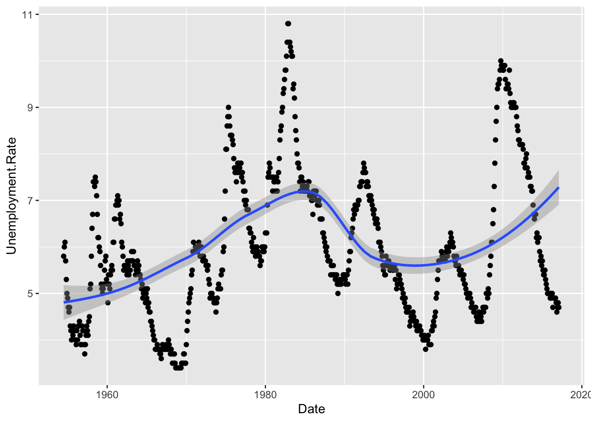
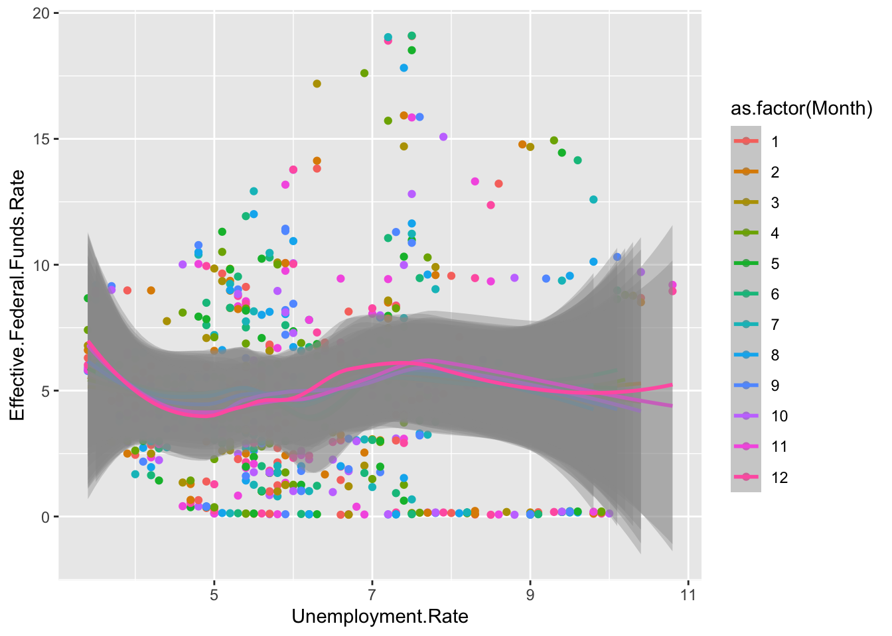

library(tidyverse)
library(ggplot2)
knitr::opts_chunk$set(echo = TRUE, warning=FALSE, message=FALSE)Challenge 6 Instructions
challenge_6
fed_rate
Visualizing Time and Relationships
Challenge Overview
Today’s challenge is to:
- read in a data set, and describe the data set using both words and any supporting information (e.g., tables, etc)
- tidy data (as needed, including sanity checks)
- mutate variables as needed (including sanity checks)
- create at least one graph including time (evolution)
- try to make them “publication” ready (optional)
- Explain why you choose the specific graph type
- Create at least one graph depicting part-whole or flow relationships
- try to make them “publication” ready (optional)
- Explain why you choose the specific graph type
R Graph Gallery is a good starting point for thinking about what information is conveyed in standard graph types, and includes example R code.
(be sure to only include the category tags for the data you use!)
Read in data
library(readr)
fedrate <- read.csv(file = "_data/FedFundsRate.csv",
header=TRUE,
sep = ","
)
fedrate Year Month Day Federal.Funds.Target.Rate Federal.Funds.Upper.Target
1 1954 7 1 NA NA
2 1954 8 1 NA NA
3 1954 9 1 NA NA
4 1954 10 1 NA NA
5 1954 11 1 NA NA
6 1954 12 1 NA NA
7 1955 1 1 NA NA
8 1955 2 1 NA NA
9 1955 3 1 NA NA
10 1955 4 1 NA NA
11 1955 5 1 NA NA
12 1955 6 1 NA NA
13 1955 7 1 NA NA
14 1955 8 1 NA NA
15 1955 9 1 NA NA
16 1955 10 1 NA NA
17 1955 11 1 NA NA
18 1955 12 1 NA NA
19 1956 1 1 NA NA
20 1956 2 1 NA NA
21 1956 3 1 NA NA
22 1956 4 1 NA NA
23 1956 5 1 NA NA
24 1956 6 1 NA NA
25 1956 7 1 NA NA
26 1956 8 1 NA NA
27 1956 9 1 NA NA
28 1956 10 1 NA NA
29 1956 11 1 NA NA
30 1956 12 1 NA NA
31 1957 1 1 NA NA
32 1957 2 1 NA NA
33 1957 3 1 NA NA
34 1957 4 1 NA NA
35 1957 5 1 NA NA
36 1957 6 1 NA NA
37 1957 7 1 NA NA
38 1957 8 1 NA NA
39 1957 9 1 NA NA
40 1957 10 1 NA NA
41 1957 11 1 NA NA
42 1957 12 1 NA NA
43 1958 1 1 NA NA
44 1958 2 1 NA NA
45 1958 3 1 NA NA
46 1958 4 1 NA NA
47 1958 5 1 NA NA
48 1958 6 1 NA NA
49 1958 7 1 NA NA
50 1958 8 1 NA NA
51 1958 9 1 NA NA
52 1958 10 1 NA NA
53 1958 11 1 NA NA
54 1958 12 1 NA NA
55 1959 1 1 NA NA
56 1959 2 1 NA NA
57 1959 3 1 NA NA
58 1959 4 1 NA NA
59 1959 5 1 NA NA
60 1959 6 1 NA NA
61 1959 7 1 NA NA
62 1959 8 1 NA NA
63 1959 9 1 NA NA
64 1959 10 1 NA NA
65 1959 11 1 NA NA
66 1959 12 1 NA NA
67 1960 1 1 NA NA
68 1960 2 1 NA NA
69 1960 3 1 NA NA
70 1960 4 1 NA NA
71 1960 5 1 NA NA
72 1960 6 1 NA NA
73 1960 7 1 NA NA
74 1960 8 1 NA NA
75 1960 9 1 NA NA
76 1960 10 1 NA NA
77 1960 11 1 NA NA
78 1960 12 1 NA NA
79 1961 1 1 NA NA
80 1961 2 1 NA NA
81 1961 3 1 NA NA
82 1961 4 1 NA NA
83 1961 5 1 NA NA
84 1961 6 1 NA NA
85 1961 7 1 NA NA
86 1961 8 1 NA NA
87 1961 9 1 NA NA
88 1961 10 1 NA NA
89 1961 11 1 NA NA
90 1961 12 1 NA NA
91 1962 1 1 NA NA
92 1962 2 1 NA NA
93 1962 3 1 NA NA
94 1962 4 1 NA NA
95 1962 5 1 NA NA
96 1962 6 1 NA NA
97 1962 7 1 NA NA
98 1962 8 1 NA NA
99 1962 9 1 NA NA
100 1962 10 1 NA NA
101 1962 11 1 NA NA
102 1962 12 1 NA NA
103 1963 1 1 NA NA
104 1963 2 1 NA NA
105 1963 3 1 NA NA
106 1963 4 1 NA NA
107 1963 5 1 NA NA
108 1963 6 1 NA NA
109 1963 7 1 NA NA
110 1963 8 1 NA NA
111 1963 9 1 NA NA
112 1963 10 1 NA NA
113 1963 11 1 NA NA
114 1963 12 1 NA NA
115 1964 1 1 NA NA
116 1964 2 1 NA NA
117 1964 3 1 NA NA
118 1964 4 1 NA NA
119 1964 5 1 NA NA
120 1964 6 1 NA NA
121 1964 7 1 NA NA
122 1964 8 1 NA NA
123 1964 9 1 NA NA
124 1964 10 1 NA NA
125 1964 11 1 NA NA
126 1964 12 1 NA NA
127 1965 1 1 NA NA
128 1965 2 1 NA NA
129 1965 3 1 NA NA
130 1965 4 1 NA NA
131 1965 5 1 NA NA
132 1965 6 1 NA NA
133 1965 7 1 NA NA
134 1965 8 1 NA NA
135 1965 9 1 NA NA
136 1965 10 1 NA NA
137 1965 11 1 NA NA
138 1965 12 1 NA NA
139 1966 1 1 NA NA
140 1966 2 1 NA NA
141 1966 3 1 NA NA
142 1966 4 1 NA NA
143 1966 5 1 NA NA
144 1966 6 1 NA NA
145 1966 7 1 NA NA
146 1966 8 1 NA NA
147 1966 9 1 NA NA
148 1966 10 1 NA NA
149 1966 11 1 NA NA
150 1966 12 1 NA NA
151 1967 1 1 NA NA
152 1967 2 1 NA NA
153 1967 3 1 NA NA
154 1967 4 1 NA NA
155 1967 5 1 NA NA
156 1967 6 1 NA NA
157 1967 7 1 NA NA
158 1967 8 1 NA NA
159 1967 9 1 NA NA
160 1967 10 1 NA NA
161 1967 11 1 NA NA
162 1967 12 1 NA NA
163 1968 1 1 NA NA
164 1968 2 1 NA NA
165 1968 3 1 NA NA
166 1968 4 1 NA NA
167 1968 5 1 NA NA
168 1968 6 1 NA NA
169 1968 7 1 NA NA
170 1968 8 1 NA NA
171 1968 9 1 NA NA
172 1968 10 1 NA NA
173 1968 11 1 NA NA
174 1968 12 1 NA NA
175 1969 1 1 NA NA
176 1969 2 1 NA NA
177 1969 3 1 NA NA
178 1969 4 1 NA NA
179 1969 5 1 NA NA
180 1969 6 1 NA NA
181 1969 7 1 NA NA
182 1969 8 1 NA NA
183 1969 9 1 NA NA
184 1969 10 1 NA NA
185 1969 11 1 NA NA
186 1969 12 1 NA NA
187 1970 1 1 NA NA
188 1970 2 1 NA NA
189 1970 3 1 NA NA
190 1970 4 1 NA NA
191 1970 5 1 NA NA
192 1970 6 1 NA NA
193 1970 7 1 NA NA
194 1970 8 1 NA NA
195 1970 9 1 NA NA
196 1970 10 1 NA NA
197 1970 11 1 NA NA
198 1970 12 1 NA NA
199 1971 1 1 NA NA
200 1971 2 1 NA NA
201 1971 3 1 NA NA
202 1971 4 1 NA NA
203 1971 5 1 NA NA
204 1971 6 1 NA NA
205 1971 7 1 NA NA
206 1971 8 1 NA NA
207 1971 9 1 NA NA
208 1971 10 1 NA NA
209 1971 11 1 NA NA
210 1971 12 1 NA NA
211 1972 1 1 NA NA
212 1972 2 1 NA NA
213 1972 3 1 NA NA
214 1972 4 1 NA NA
215 1972 5 1 NA NA
216 1972 6 1 NA NA
217 1972 7 1 NA NA
218 1972 8 1 NA NA
219 1972 9 1 NA NA
220 1972 10 1 NA NA
221 1972 11 1 NA NA
222 1972 12 1 NA NA
223 1973 1 1 NA NA
224 1973 2 1 NA NA
225 1973 3 1 NA NA
226 1973 4 1 NA NA
227 1973 5 1 NA NA
228 1973 6 1 NA NA
229 1973 7 1 NA NA
230 1973 8 1 NA NA
231 1973 9 1 NA NA
232 1973 10 1 NA NA
233 1973 11 1 NA NA
234 1973 12 1 NA NA
235 1974 1 1 NA NA
236 1974 2 1 NA NA
237 1974 3 1 NA NA
238 1974 4 1 NA NA
239 1974 5 1 NA NA
240 1974 6 1 NA NA
241 1974 7 1 NA NA
242 1974 8 1 NA NA
243 1974 9 1 NA NA
244 1974 10 1 NA NA
245 1974 11 1 NA NA
246 1974 12 1 NA NA
247 1975 1 1 NA NA
248 1975 2 1 NA NA
249 1975 3 1 NA NA
250 1975 4 1 NA NA
251 1975 5 1 NA NA
252 1975 6 1 NA NA
253 1975 7 1 NA NA
254 1975 8 1 NA NA
255 1975 9 1 NA NA
256 1975 10 1 NA NA
257 1975 11 1 NA NA
258 1975 12 1 NA NA
259 1976 1 1 NA NA
260 1976 2 1 NA NA
261 1976 3 1 NA NA
262 1976 4 1 NA NA
263 1976 5 1 NA NA
264 1976 6 1 NA NA
265 1976 7 1 NA NA
266 1976 8 1 NA NA
267 1976 9 1 NA NA
268 1976 10 1 NA NA
269 1976 11 1 NA NA
270 1976 12 1 NA NA
271 1977 1 1 NA NA
272 1977 2 1 NA NA
273 1977 3 1 NA NA
274 1977 4 1 NA NA
275 1977 5 1 NA NA
276 1977 6 1 NA NA
277 1977 7 1 NA NA
278 1977 8 1 NA NA
279 1977 9 1 NA NA
280 1977 10 1 NA NA
281 1977 11 1 NA NA
282 1977 12 1 NA NA
283 1978 1 1 NA NA
284 1978 2 1 NA NA
285 1978 3 1 NA NA
286 1978 4 1 NA NA
287 1978 5 1 NA NA
288 1978 6 1 NA NA
289 1978 7 1 NA NA
290 1978 8 1 NA NA
291 1978 9 1 NA NA
292 1978 10 1 NA NA
293 1978 11 1 NA NA
294 1978 12 1 NA NA
295 1979 1 1 NA NA
296 1979 2 1 NA NA
297 1979 3 1 NA NA
298 1979 4 1 NA NA
299 1979 5 1 NA NA
300 1979 6 1 NA NA
301 1979 7 1 NA NA
302 1979 8 1 NA NA
303 1979 9 1 NA NA
304 1979 10 1 NA NA
305 1979 11 1 NA NA
306 1979 12 1 NA NA
307 1980 1 1 NA NA
308 1980 2 1 NA NA
309 1980 3 1 NA NA
310 1980 4 1 NA NA
311 1980 5 1 NA NA
312 1980 6 1 NA NA
313 1980 7 1 NA NA
314 1980 8 1 NA NA
315 1980 9 1 NA NA
316 1980 10 1 NA NA
317 1980 11 1 NA NA
318 1980 12 1 NA NA
319 1981 1 1 NA NA
320 1981 2 1 NA NA
321 1981 3 1 NA NA
322 1981 4 1 NA NA
323 1981 5 1 NA NA
324 1981 6 1 NA NA
325 1981 7 1 NA NA
326 1981 8 1 NA NA
327 1981 9 1 NA NA
328 1981 10 1 NA NA
329 1981 11 1 NA NA
330 1981 12 1 NA NA
331 1982 1 1 NA NA
332 1982 2 1 NA NA
333 1982 3 1 NA NA
334 1982 4 1 NA NA
335 1982 5 1 NA NA
336 1982 6 1 NA NA
337 1982 7 1 NA NA
338 1982 8 1 NA NA
339 1982 9 1 NA NA
340 1982 9 27 10.2500 NA
341 1982 10 1 10.0000 NA
342 1982 10 7 9.5000 NA
343 1982 11 1 9.5000 NA
344 1982 11 19 9.0000 NA
345 1982 12 1 9.0000 NA
346 1982 12 14 8.5000 NA
347 1983 1 1 8.5000 NA
348 1983 2 1 8.5000 NA
349 1983 3 1 8.5000 NA
350 1983 3 31 8.6250 NA
351 1983 4 1 8.6250 NA
352 1983 5 1 8.6250 NA
353 1983 5 25 8.7500 NA
354 1983 6 1 8.7500 NA
355 1983 6 24 9.0000 NA
356 1983 7 1 9.0000 NA
357 1983 7 14 9.2500 NA
358 1983 7 20 9.4375 NA
359 1983 8 1 9.4375 NA
360 1983 8 11 9.5625 NA
361 1983 8 17 9.5000 NA
362 1983 9 1 9.5000 NA
363 1983 9 15 9.3750 NA
364 1983 10 1 9.3750 NA
365 1983 11 1 9.3750 NA
366 1983 12 1 9.3750 NA
367 1984 1 1 9.3750 NA
368 1984 2 1 9.3750 NA
369 1984 3 1 9.3750 NA
370 1984 3 29 10.5000 NA
371 1984 4 1 10.5000 NA
372 1984 5 1 10.5000 NA
373 1984 6 1 10.5000 NA
374 1984 7 1 10.5000 NA
375 1984 7 5 11.0000 NA
376 1984 7 19 11.2500 NA
377 1984 8 1 11.2500 NA
378 1984 8 9 11.5000 NA
379 1984 9 1 11.5000 NA
380 1984 9 20 11.2500 NA
381 1984 9 27 11.0000 NA
382 1984 10 1 11.0000 NA
383 1984 10 11 10.5000 NA
384 1984 10 18 10.0000 NA
385 1984 11 1 10.0000 NA
386 1984 11 8 9.5000 NA
387 1984 11 23 9.0000 NA
388 1984 12 1 9.0000 NA
389 1984 12 6 8.7500 NA
390 1984 12 19 8.5000 NA
391 1984 12 24 8.1250 NA
392 1985 1 1 8.1250 NA
393 1985 1 24 8.2500 NA
394 1985 2 1 8.2500 NA
395 1985 2 14 8.3750 NA
396 1985 3 1 8.3750 NA
397 1985 3 28 8.5000 NA
398 1985 4 1 8.5000 NA
399 1985 4 25 8.2500 NA
400 1985 5 1 8.2500 NA
401 1985 5 20 7.7500 NA
402 1985 6 1 7.7500 NA
403 1985 7 1 7.7500 NA
404 1985 7 11 7.6875 NA
405 1985 8 1 7.7500 NA
406 1985 8 21 7.8125 NA
407 1985 9 1 7.8125 NA
408 1985 9 6 8.0000 NA
409 1985 10 1 8.0000 NA
410 1985 11 1 8.0000 NA
411 1985 12 1 8.0000 NA
412 1985 12 18 7.7500 NA
413 1986 1 1 7.7500 NA
414 1986 2 1 7.7500 NA
415 1986 3 1 7.7500 NA
416 1986 3 7 7.2500 NA
417 1986 4 1 7.2500 NA
418 1986 4 2 7.3125 NA
419 1986 4 21 6.7500 NA
420 1986 5 1 6.7500 NA
421 1986 5 22 6.8125 NA
422 1986 6 1 6.8125 NA
423 1986 6 5 6.8750 NA
424 1986 7 1 6.8750 NA
425 1986 7 11 6.3750 NA
426 1986 8 1 6.3750 NA
427 1986 8 21 5.8750 NA
428 1986 9 1 5.8750 NA
429 1986 10 1 5.8750 NA
430 1986 11 1 5.8750 NA
431 1986 12 1 5.8750 NA
432 1987 1 1 5.8750 NA
433 1987 1 5 6.0000 NA
434 1987 2 1 6.0000 NA
435 1987 3 1 6.0000 NA
436 1987 4 1 6.0000 NA
437 1987 4 30 6.5000 NA
438 1987 5 1 6.5000 NA
439 1987 5 22 6.7500 NA
440 1987 6 1 6.7500 NA
441 1987 7 1 6.7500 NA
442 1987 7 2 6.6250 NA
443 1987 8 1 6.6250 NA
444 1987 8 27 6.7500 NA
445 1987 9 1 6.7500 NA
446 1987 9 3 6.8750 NA
447 1987 9 4 7.2500 NA
448 1987 9 24 7.3125 NA
449 1987 10 1 7.3125 NA
450 1987 11 1 7.3125 NA
451 1987 11 4 6.8125 NA
452 1987 12 1 6.8125 NA
453 1988 1 1 6.8125 NA
454 1988 1 28 6.6250 NA
455 1988 2 1 6.6250 NA
456 1988 2 11 6.5000 NA
457 1988 3 1 6.5000 NA
458 1988 3 30 6.7500 NA
459 1988 4 1 6.7500 NA
460 1988 5 1 6.7500 NA
461 1988 5 9 7.0000 NA
462 1988 5 25 7.2500 NA
463 1988 6 1 7.2500 NA
464 1988 6 22 7.4375 NA
465 1988 7 1 7.5000 NA
466 1988 7 19 7.6875 NA
467 1988 8 1 7.6875 NA
468 1988 8 8 7.7500 NA
469 1988 8 9 8.1250 NA
470 1988 9 1 8.1250 NA
471 1988 10 1 8.1250 NA
472 1988 11 1 8.1250 NA
473 1988 11 17 8.3125 NA
474 1988 11 22 8.3750 NA
475 1988 12 1 8.3750 NA
476 1988 12 15 8.6875 NA
477 1989 1 1 8.6875 NA
478 1989 1 5 9.0000 NA
479 1989 2 1 9.0000 NA
480 1989 2 9 9.1250 NA
481 1989 2 14 9.3125 NA
482 1989 2 24 9.7500 NA
483 1989 3 1 9.7500 NA
484 1989 4 1 9.7500 NA
485 1989 5 1 9.7500 NA
486 1989 5 17 9.8125 NA
487 1989 6 1 9.8125 NA
488 1989 6 6 9.5625 NA
489 1989 7 1 9.5625 NA
490 1989 7 7 9.3125 NA
491 1989 7 27 9.0625 NA
492 1989 8 1 9.0625 NA
493 1989 9 1 9.0625 NA
494 1989 10 1 9.0625 NA
495 1989 10 19 8.7500 NA
496 1989 11 1 8.7500 NA
497 1989 11 6 8.5000 NA
498 1989 12 1 8.5000 NA
499 1989 12 20 8.2500 NA
500 1990 1 1 8.2500 NA
501 1990 2 1 8.2500 NA
502 1990 3 1 8.2500 NA
503 1990 4 1 8.2500 NA
504 1990 5 1 8.2500 NA
505 1990 6 1 8.2500 NA
506 1990 7 1 8.2500 NA
507 1990 7 13 8.0000 NA
508 1990 8 1 8.0000 NA
509 1990 9 1 8.0000 NA
510 1990 10 1 8.0000 NA
511 1990 10 29 7.7500 NA
512 1990 11 1 7.7500 NA
513 1990 11 14 7.5000 NA
514 1990 12 1 7.5000 NA
515 1990 12 7 7.2500 NA
516 1990 12 19 7.0000 NA
517 1991 1 1 7.0000 NA
518 1991 1 9 6.7500 NA
519 1991 2 1 6.2500 NA
520 1991 3 1 6.2500 NA
521 1991 3 8 6.0000 NA
522 1991 4 1 6.0000 NA
523 1991 4 30 5.7500 NA
524 1991 5 1 5.7500 NA
525 1991 6 1 5.7500 NA
526 1991 7 1 5.7500 NA
527 1991 8 1 5.7500 NA
528 1991 8 6 5.5000 NA
529 1991 9 1 5.5000 NA
530 1991 9 13 5.2500 NA
531 1991 10 1 5.2500 NA
532 1991 10 31 5.0000 NA
533 1991 11 1 5.0000 NA
534 1991 11 6 4.7500 NA
535 1991 12 1 4.7500 NA
536 1991 12 6 4.5000 NA
537 1991 12 20 4.0000 NA
538 1992 1 1 4.0000 NA
539 1992 2 1 4.0000 NA
540 1992 3 1 4.0000 NA
541 1992 4 1 4.0000 NA
542 1992 4 9 3.7500 NA
543 1992 5 1 3.7500 NA
544 1992 6 1 3.7500 NA
545 1992 7 1 3.7500 NA
546 1992 7 2 3.2500 NA
547 1992 8 1 3.2500 NA
548 1992 9 1 3.2500 NA
549 1992 9 4 3.0000 NA
550 1992 10 1 3.0000 NA
551 1992 11 1 3.0000 NA
552 1992 12 1 3.0000 NA
553 1993 1 1 3.0000 NA
554 1993 2 1 3.0000 NA
555 1993 3 1 3.0000 NA
556 1993 4 1 3.0000 NA
557 1993 5 1 3.0000 NA
558 1993 6 1 3.0000 NA
559 1993 7 1 3.0000 NA
560 1993 8 1 3.0000 NA
561 1993 9 1 3.0000 NA
562 1993 10 1 3.0000 NA
563 1993 11 1 3.0000 NA
564 1993 12 1 3.0000 NA
565 1994 1 1 3.0000 NA
566 1994 2 1 3.0000 NA
567 1994 2 4 3.2500 NA
568 1994 3 1 3.2500 NA
569 1994 3 22 3.5000 NA
570 1994 4 1 3.5000 NA
571 1994 4 18 3.7500 NA
572 1994 5 1 3.7500 NA
573 1994 5 17 4.2500 NA
574 1994 6 1 4.2500 NA
575 1994 7 1 4.2500 NA
576 1994 8 1 4.2500 NA
577 1994 8 16 4.7500 NA
578 1994 9 1 4.7500 NA
579 1994 10 1 4.7500 NA
580 1994 11 1 4.7500 NA
581 1994 11 15 5.5000 NA
582 1994 12 1 5.5000 NA
583 1995 1 1 5.5000 NA
584 1995 2 1 6.0000 NA
585 1995 3 1 6.0000 NA
586 1995 4 1 6.0000 NA
587 1995 5 1 6.0000 NA
588 1995 6 1 6.0000 NA
589 1995 7 1 6.0000 NA
590 1995 7 6 5.7500 NA
591 1995 8 1 5.7500 NA
592 1995 9 1 5.7500 NA
593 1995 10 1 5.7500 NA
594 1995 11 1 5.7500 NA
595 1995 12 1 5.7500 NA
596 1995 12 19 5.5000 NA
597 1996 1 1 5.5000 NA
598 1996 1 31 5.2500 NA
599 1996 2 1 5.2500 NA
600 1996 3 1 5.2500 NA
601 1996 4 1 5.2500 NA
602 1996 5 1 5.2500 NA
603 1996 6 1 5.2500 NA
604 1996 7 1 5.2500 NA
605 1996 8 1 5.2500 NA
606 1996 9 1 5.2500 NA
607 1996 10 1 5.2500 NA
608 1996 11 1 5.2500 NA
609 1996 12 1 5.2500 NA
610 1997 1 1 5.2500 NA
611 1997 2 1 5.2500 NA
612 1997 3 1 5.2500 NA
613 1997 3 25 5.5000 NA
614 1997 4 1 5.5000 NA
615 1997 5 1 5.5000 NA
616 1997 6 1 5.5000 NA
617 1997 7 1 5.5000 NA
618 1997 8 1 5.5000 NA
619 1997 9 1 5.5000 NA
620 1997 10 1 5.5000 NA
621 1997 11 1 5.5000 NA
622 1997 12 1 5.5000 NA
623 1998 1 1 5.5000 NA
624 1998 2 1 5.5000 NA
625 1998 3 1 5.5000 NA
626 1998 4 1 5.5000 NA
627 1998 5 1 5.5000 NA
628 1998 6 1 5.5000 NA
629 1998 7 1 5.5000 NA
630 1998 8 1 5.5000 NA
631 1998 9 1 5.5000 NA
632 1998 9 29 5.2500 NA
633 1998 10 1 5.2500 NA
634 1998 10 15 5.0000 NA
635 1998 11 1 5.0000 NA
636 1998 11 17 4.7500 NA
637 1998 12 1 4.7500 NA
638 1999 1 1 4.7500 NA
639 1999 2 1 4.7500 NA
640 1999 3 1 4.7500 NA
641 1999 4 1 4.7500 NA
642 1999 5 1 4.7500 NA
643 1999 6 1 4.7500 NA
644 1999 6 30 5.0000 NA
645 1999 7 1 5.0000 NA
646 1999 8 1 5.0000 NA
647 1999 8 24 5.2500 NA
648 1999 9 1 5.2500 NA
649 1999 10 1 5.2500 NA
650 1999 11 1 5.2500 NA
651 1999 11 16 5.5000 NA
652 1999 12 1 5.5000 NA
653 2000 1 1 5.5000 NA
654 2000 2 1 5.5000 NA
655 2000 2 2 5.7500 NA
656 2000 3 1 5.7500 NA
657 2000 3 21 6.0000 NA
658 2000 4 1 6.0000 NA
659 2000 5 1 6.0000 NA
660 2000 5 16 6.5000 NA
661 2000 6 1 6.5000 NA
662 2000 7 1 6.5000 NA
663 2000 8 1 6.5000 NA
664 2000 9 1 6.5000 NA
665 2000 10 1 6.5000 NA
666 2000 11 1 6.5000 NA
667 2000 12 1 6.5000 NA
668 2001 1 1 6.5000 NA
669 2001 1 3 6.0000 NA
670 2001 1 31 5.5000 NA
671 2001 2 1 5.5000 NA
672 2001 3 1 5.5000 NA
673 2001 3 20 5.0000 NA
674 2001 4 1 5.0000 NA
675 2001 4 18 4.5000 NA
676 2001 5 1 4.5000 NA
677 2001 5 15 4.0000 NA
678 2001 6 1 4.0000 NA
679 2001 6 27 3.7500 NA
680 2001 7 1 3.7500 NA
681 2001 8 1 3.7500 NA
682 2001 8 21 3.5000 NA
683 2001 9 1 3.5000 NA
684 2001 9 17 3.0000 NA
685 2001 10 1 3.0000 NA
686 2001 10 2 2.5000 NA
687 2001 11 1 2.5000 NA
688 2001 11 6 2.0000 NA
689 2001 12 1 2.0000 NA
690 2001 12 11 1.7500 NA
691 2002 1 1 1.7500 NA
692 2002 2 1 1.7500 NA
693 2002 3 1 1.7500 NA
694 2002 4 1 1.7500 NA
695 2002 5 1 1.7500 NA
696 2002 6 1 1.7500 NA
697 2002 7 1 1.7500 NA
698 2002 8 1 1.7500 NA
699 2002 9 1 1.7500 NA
700 2002 10 1 1.7500 NA
701 2002 11 1 1.7500 NA
702 2002 11 6 1.2500 NA
703 2002 12 1 1.2500 NA
704 2003 1 1 1.2500 NA
705 2003 2 1 1.2500 NA
706 2003 3 1 1.2500 NA
707 2003 4 1 1.2500 NA
708 2003 5 1 1.2500 NA
709 2003 6 1 1.2500 NA
710 2003 6 25 1.0000 NA
711 2003 7 1 1.0000 NA
712 2003 8 1 1.0000 NA
713 2003 9 1 1.0000 NA
714 2003 10 1 1.0000 NA
715 2003 11 1 1.0000 NA
716 2003 12 1 1.0000 NA
717 2004 1 1 1.0000 NA
718 2004 2 1 1.0000 NA
719 2004 3 1 1.0000 NA
720 2004 4 1 1.0000 NA
721 2004 5 1 1.0000 NA
722 2004 6 1 1.0000 NA
723 2004 6 30 1.2500 NA
724 2004 7 1 1.2500 NA
725 2004 8 1 1.2500 NA
726 2004 8 10 1.5000 NA
727 2004 9 1 1.5000 NA
728 2004 9 21 1.7500 NA
729 2004 10 1 1.7500 NA
730 2004 11 1 1.7500 NA
731 2004 11 10 2.0000 NA
732 2004 12 1 2.0000 NA
733 2004 12 14 2.2500 NA
734 2005 1 1 2.2500 NA
735 2005 2 1 2.2500 NA
736 2005 2 2 2.5000 NA
737 2005 3 1 2.5000 NA
738 2005 3 22 2.7500 NA
739 2005 4 1 2.7500 NA
740 2005 5 1 2.7500 NA
741 2005 5 3 3.0000 NA
742 2005 6 1 3.0000 NA
743 2005 6 30 3.2500 NA
744 2005 7 1 3.2500 NA
745 2005 8 1 3.2500 NA
746 2005 8 9 3.5000 NA
747 2005 9 1 3.5000 NA
748 2005 9 20 3.7500 NA
749 2005 10 1 3.7500 NA
750 2005 11 1 4.0000 NA
751 2005 12 1 4.0000 NA
752 2005 12 13 4.2500 NA
753 2006 1 1 4.2500 NA
754 2006 1 31 4.5000 NA
755 2006 2 1 4.5000 NA
756 2006 3 1 4.5000 NA
757 2006 3 28 4.7500 NA
758 2006 4 1 4.7500 NA
759 2006 5 1 4.7500 NA
760 2006 5 10 5.0000 NA
761 2006 6 1 5.0000 NA
762 2006 6 29 5.2500 NA
763 2006 7 1 5.2500 NA
764 2006 8 1 5.2500 NA
765 2006 9 1 5.2500 NA
766 2006 10 1 5.2500 NA
767 2006 11 1 5.2500 NA
768 2006 12 1 5.2500 NA
769 2007 1 1 5.2500 NA
770 2007 2 1 5.2500 NA
771 2007 3 1 5.2500 NA
772 2007 4 1 5.2500 NA
773 2007 5 1 5.2500 NA
774 2007 6 1 5.2500 NA
775 2007 7 1 5.2500 NA
776 2007 8 1 5.2500 NA
777 2007 9 1 5.2500 NA
778 2007 9 18 4.7500 NA
779 2007 10 1 4.7500 NA
780 2007 10 31 4.5000 NA
781 2007 11 1 4.5000 NA
782 2007 12 1 4.5000 NA
783 2007 12 11 4.2500 NA
784 2008 1 1 4.2500 NA
785 2008 1 22 3.5000 NA
786 2008 1 30 3.0000 NA
787 2008 2 1 3.0000 NA
788 2008 3 1 3.0000 NA
789 2008 3 18 2.2500 NA
790 2008 4 1 2.2500 NA
791 2008 4 30 2.0000 NA
792 2008 5 1 2.0000 NA
793 2008 6 1 2.0000 NA
794 2008 7 1 2.0000 NA
795 2008 8 1 2.0000 NA
796 2008 9 1 2.0000 NA
797 2008 10 1 2.0000 NA
798 2008 10 8 1.5000 NA
799 2008 10 29 1.0000 NA
800 2008 11 1 1.0000 NA
801 2008 12 1 1.0000 NA
802 2008 12 16 NA 0.25
803 2009 1 1 NA 0.25
804 2009 2 1 NA 0.25
805 2009 3 1 NA 0.25
806 2009 4 1 NA 0.25
807 2009 5 1 NA 0.25
808 2009 6 1 NA 0.25
809 2009 7 1 NA 0.25
810 2009 8 1 NA 0.25
811 2009 9 1 NA 0.25
812 2009 10 1 NA 0.25
813 2009 11 1 NA 0.25
814 2009 12 1 NA 0.25
815 2010 1 1 NA 0.25
816 2010 2 1 NA 0.25
817 2010 3 1 NA 0.25
818 2010 4 1 NA 0.25
819 2010 5 1 NA 0.25
820 2010 6 1 NA 0.25
821 2010 7 1 NA 0.25
822 2010 8 1 NA 0.25
823 2010 9 1 NA 0.25
824 2010 10 1 NA 0.25
825 2010 11 1 NA 0.25
826 2010 12 1 NA 0.25
827 2011 1 1 NA 0.25
828 2011 2 1 NA 0.25
829 2011 3 1 NA 0.25
830 2011 4 1 NA 0.25
831 2011 5 1 NA 0.25
832 2011 6 1 NA 0.25
833 2011 7 1 NA 0.25
834 2011 8 1 NA 0.25
835 2011 9 1 NA 0.25
836 2011 10 1 NA 0.25
837 2011 11 1 NA 0.25
838 2011 12 1 NA 0.25
839 2012 1 1 NA 0.25
840 2012 2 1 NA 0.25
841 2012 3 1 NA 0.25
842 2012 4 1 NA 0.25
843 2012 5 1 NA 0.25
844 2012 6 1 NA 0.25
845 2012 7 1 NA 0.25
846 2012 8 1 NA 0.25
847 2012 9 1 NA 0.25
848 2012 10 1 NA 0.25
849 2012 11 1 NA 0.25
850 2012 12 1 NA 0.25
851 2013 1 1 NA 0.25
852 2013 2 1 NA 0.25
853 2013 3 1 NA 0.25
854 2013 4 1 NA 0.25
855 2013 5 1 NA 0.25
856 2013 6 1 NA 0.25
857 2013 7 1 NA 0.25
858 2013 8 1 NA 0.25
859 2013 9 1 NA 0.25
860 2013 10 1 NA 0.25
861 2013 11 1 NA 0.25
862 2013 12 1 NA 0.25
863 2014 1 1 NA 0.25
864 2014 2 1 NA 0.25
865 2014 3 1 NA 0.25
866 2014 4 1 NA 0.25
867 2014 5 1 NA 0.25
868 2014 6 1 NA 0.25
869 2014 7 1 NA 0.25
870 2014 8 1 NA 0.25
871 2014 9 1 NA 0.25
872 2014 10 1 NA 0.25
873 2014 11 1 NA 0.25
874 2014 12 1 NA 0.25
875 2015 1 1 NA 0.25
876 2015 2 1 NA 0.25
877 2015 3 1 NA 0.25
878 2015 4 1 NA 0.25
879 2015 5 1 NA 0.25
880 2015 6 1 NA 0.25
881 2015 7 1 NA 0.25
882 2015 8 1 NA 0.25
883 2015 9 1 NA 0.25
884 2015 10 1 NA 0.25
885 2015 11 1 NA 0.25
886 2015 12 1 NA 0.25
887 2015 12 16 NA 0.50
888 2016 1 1 NA 0.50
889 2016 2 1 NA 0.50
890 2016 3 1 NA 0.50
891 2016 4 1 NA 0.50
892 2016 5 1 NA 0.50
893 2016 6 1 NA 0.50
894 2016 7 1 NA 0.50
895 2016 8 1 NA 0.50
896 2016 9 1 NA 0.50
897 2016 10 1 NA 0.50
898 2016 11 1 NA 0.50
899 2016 12 1 NA 0.50
900 2016 12 14 NA 0.75
901 2017 1 1 NA 0.75
902 2017 2 1 NA 0.75
903 2017 3 1 NA 0.75
904 2017 3 16 NA 1.00
Federal.Funds.Lower.Target Effective.Federal.Funds.Rate
1 NA 0.80
2 NA 1.22
3 NA 1.06
4 NA 0.85
5 NA 0.83
6 NA 1.28
7 NA 1.39
8 NA 1.29
9 NA 1.35
10 NA 1.43
11 NA 1.43
12 NA 1.64
13 NA 1.68
14 NA 1.96
15 NA 2.18
16 NA 2.24
17 NA 2.35
18 NA 2.48
19 NA 2.45
20 NA 2.50
21 NA 2.50
22 NA 2.62
23 NA 2.75
24 NA 2.71
25 NA 2.75
26 NA 2.73
27 NA 2.95
28 NA 2.96
29 NA 2.88
30 NA 2.94
31 NA 2.84
32 NA 3.00
33 NA 2.96
34 NA 3.00
35 NA 3.00
36 NA 3.00
37 NA 2.99
38 NA 3.24
39 NA 3.47
40 NA 3.50
41 NA 3.28
42 NA 2.98
43 NA 2.72
44 NA 1.67
45 NA 1.20
46 NA 1.26
47 NA 0.63
48 NA 0.93
49 NA 0.68
50 NA 1.53
51 NA 1.76
52 NA 1.80
53 NA 2.27
54 NA 2.42
55 NA 2.48
56 NA 2.43
57 NA 2.80
58 NA 2.96
59 NA 2.90
60 NA 3.39
61 NA 3.47
62 NA 3.50
63 NA 3.76
64 NA 3.98
65 NA 4.00
66 NA 3.99
67 NA 3.99
68 NA 3.97
69 NA 3.84
70 NA 3.92
71 NA 3.85
72 NA 3.32
73 NA 3.23
74 NA 2.98
75 NA 2.60
76 NA 2.47
77 NA 2.44
78 NA 1.98
79 NA 1.45
80 NA 2.54
81 NA 2.02
82 NA 1.49
83 NA 1.98
84 NA 1.73
85 NA 1.17
86 NA 2.00
87 NA 1.88
88 NA 2.26
89 NA 2.61
90 NA 2.33
91 NA 2.15
92 NA 2.37
93 NA 2.85
94 NA 2.78
95 NA 2.36
96 NA 2.68
97 NA 2.71
98 NA 2.93
99 NA 2.90
100 NA 2.90
101 NA 2.94
102 NA 2.93
103 NA 2.92
104 NA 3.00
105 NA 2.98
106 NA 2.90
107 NA 3.00
108 NA 2.99
109 NA 3.02
110 NA 3.49
111 NA 3.48
112 NA 3.50
113 NA 3.48
114 NA 3.38
115 NA 3.48
116 NA 3.48
117 NA 3.43
118 NA 3.47
119 NA 3.50
120 NA 3.50
121 NA 3.42
122 NA 3.50
123 NA 3.45
124 NA 3.36
125 NA 3.52
126 NA 3.85
127 NA 3.90
128 NA 3.98
129 NA 4.04
130 NA 4.09
131 NA 4.10
132 NA 4.04
133 NA 4.09
134 NA 4.12
135 NA 4.01
136 NA 4.08
137 NA 4.10
138 NA 4.32
139 NA 4.42
140 NA 4.60
141 NA 4.65
142 NA 4.67
143 NA 4.90
144 NA 5.17
145 NA 5.30
146 NA 5.53
147 NA 5.40
148 NA 5.53
149 NA 5.76
150 NA 5.40
151 NA 4.94
152 NA 5.00
153 NA 4.53
154 NA 4.05
155 NA 3.94
156 NA 3.98
157 NA 3.79
158 NA 3.90
159 NA 3.99
160 NA 3.88
161 NA 4.13
162 NA 4.51
163 NA 4.60
164 NA 4.71
165 NA 5.05
166 NA 5.76
167 NA 6.11
168 NA 6.07
169 NA 6.02
170 NA 6.03
171 NA 5.78
172 NA 5.91
173 NA 5.82
174 NA 6.02
175 NA 6.30
176 NA 6.61
177 NA 6.79
178 NA 7.41
179 NA 8.67
180 NA 8.90
181 NA 8.61
182 NA 9.19
183 NA 9.15
184 NA 9.00
185 NA 8.85
186 NA 8.97
187 NA 8.98
188 NA 8.98
189 NA 7.76
190 NA 8.10
191 NA 7.94
192 NA 7.60
193 NA 7.21
194 NA 6.61
195 NA 6.29
196 NA 6.20
197 NA 5.60
198 NA 4.90
199 NA 4.14
200 NA 3.72
201 NA 3.71
202 NA 4.15
203 NA 4.63
204 NA 4.91
205 NA 5.31
206 NA 5.56
207 NA 5.55
208 NA 5.20
209 NA 4.91
210 NA 4.14
211 NA 3.50
212 NA 3.29
213 NA 3.83
214 NA 4.17
215 NA 4.27
216 NA 4.46
217 NA 4.55
218 NA 4.80
219 NA 4.87
220 NA 5.04
221 NA 5.06
222 NA 5.33
223 NA 5.94
224 NA 6.58
225 NA 7.09
226 NA 7.12
227 NA 7.84
228 NA 8.49
229 NA 10.40
230 NA 10.50
231 NA 10.78
232 NA 10.01
233 NA 10.03
234 NA 9.95
235 NA 9.65
236 NA 8.97
237 NA 9.35
238 NA 10.51
239 NA 11.31
240 NA 11.93
241 NA 12.92
242 NA 12.01
243 NA 11.34
244 NA 10.06
245 NA 9.45
246 NA 8.53
247 NA 7.13
248 NA 6.24
249 NA 5.54
250 NA 5.49
251 NA 5.22
252 NA 5.55
253 NA 6.10
254 NA 6.14
255 NA 6.24
256 NA 5.82
257 NA 5.22
258 NA 5.20
259 NA 4.87
260 NA 4.77
261 NA 4.84
262 NA 4.82
263 NA 5.29
264 NA 5.48
265 NA 5.31
266 NA 5.29
267 NA 5.25
268 NA 5.02
269 NA 4.95
270 NA 4.65
271 NA 4.61
272 NA 4.68
273 NA 4.69
274 NA 4.73
275 NA 5.35
276 NA 5.39
277 NA 5.42
278 NA 5.90
279 NA 6.14
280 NA 6.47
281 NA 6.51
282 NA 6.56
283 NA 6.70
284 NA 6.78
285 NA 6.79
286 NA 6.89
287 NA 7.36
288 NA 7.60
289 NA 7.81
290 NA 8.04
291 NA 8.45
292 NA 8.96
293 NA 9.76
294 NA 10.03
295 NA 10.07
296 NA 10.06
297 NA 10.09
298 NA 10.01
299 NA 10.24
300 NA 10.29
301 NA 10.47
302 NA 10.94
303 NA 11.43
304 NA 13.77
305 NA 13.18
306 NA 13.78
307 NA 13.82
308 NA 14.13
309 NA 17.19
310 NA 17.61
311 NA 10.98
312 NA 9.47
313 NA 9.03
314 NA 9.61
315 NA 10.87
316 NA 12.81
317 NA 15.85
318 NA 18.90
319 NA 19.08
320 NA 15.93
321 NA 14.70
322 NA 15.72
323 NA 18.52
324 NA 19.10
325 NA 19.04
326 NA 17.82
327 NA 15.87
328 NA 15.08
329 NA 13.31
330 NA 12.37
331 NA 13.22
332 NA 14.78
333 NA 14.68
334 NA 14.94
335 NA 14.45
336 NA 14.15
337 NA 12.59
338 NA 10.12
339 NA 10.31
340 NA NA
341 NA 9.71
342 NA NA
343 NA 9.20
344 NA NA
345 NA 8.95
346 NA NA
347 NA 8.68
348 NA 8.51
349 NA 8.77
350 NA NA
351 NA 8.80
352 NA 8.63
353 NA NA
354 NA 8.98
355 NA NA
356 NA 9.37
357 NA NA
358 NA NA
359 NA 9.56
360 NA NA
361 NA NA
362 NA 9.45
363 NA NA
364 NA 9.48
365 NA 9.34
366 NA 9.47
367 NA 9.56
368 NA 9.59
369 NA 9.91
370 NA NA
371 NA 10.29
372 NA 10.32
373 NA 11.06
374 NA 11.23
375 NA NA
376 NA NA
377 NA 11.64
378 NA NA
379 NA 11.30
380 NA NA
381 NA NA
382 NA 9.99
383 NA NA
384 NA NA
385 NA 9.43
386 NA NA
387 NA NA
388 NA 8.38
389 NA NA
390 NA NA
391 NA NA
392 NA 8.35
393 NA NA
394 NA 8.50
395 NA NA
396 NA 8.58
397 NA NA
398 NA 8.27
399 NA NA
400 NA 7.97
401 NA NA
402 NA 7.53
403 NA 7.88
404 NA NA
405 NA 7.90
406 NA NA
407 NA 7.92
408 NA NA
409 NA 7.99
410 NA 8.05
411 NA 8.27
412 NA NA
413 NA 8.14
414 NA 7.86
415 NA 7.48
416 NA NA
417 NA 6.99
418 NA NA
419 NA NA
420 NA 6.85
421 NA NA
422 NA 6.92
423 NA NA
424 NA 6.56
425 NA NA
426 NA 6.17
427 NA NA
428 NA 5.89
429 NA 5.85
430 NA 6.04
431 NA 6.91
432 NA 6.43
433 NA NA
434 NA 6.10
435 NA 6.13
436 NA 6.37
437 NA NA
438 NA 6.85
439 NA NA
440 NA 6.73
441 NA 6.58
442 NA NA
443 NA 6.73
444 NA NA
445 NA 7.22
446 NA NA
447 NA NA
448 NA NA
449 NA 7.29
450 NA 6.69
451 NA NA
452 NA 6.77
453 NA 6.83
454 NA NA
455 NA 6.58
456 NA NA
457 NA 6.58
458 NA NA
459 NA 6.87
460 NA 7.09
461 NA NA
462 NA NA
463 NA 7.51
464 NA NA
465 NA 7.75
466 NA NA
467 NA 8.01
468 NA NA
469 NA NA
470 NA 8.19
471 NA 8.30
472 NA 8.35
473 NA NA
474 NA NA
475 NA 8.76
476 NA NA
477 NA 9.12
478 NA NA
479 NA 9.36
480 NA NA
481 NA NA
482 NA NA
483 NA 9.85
484 NA 9.84
485 NA 9.81
486 NA NA
487 NA 9.53
488 NA NA
489 NA 9.24
490 NA NA
491 NA NA
492 NA 8.99
493 NA 9.02
494 NA 8.84
495 NA NA
496 NA 8.55
497 NA NA
498 NA 8.45
499 NA NA
500 NA 8.23
501 NA 8.24
502 NA 8.28
503 NA 8.26
504 NA 8.18
505 NA 8.29
506 NA 8.15
507 NA NA
508 NA 8.13
509 NA 8.20
510 NA 8.11
511 NA NA
512 NA 7.81
513 NA NA
514 NA 7.31
515 NA NA
516 NA NA
517 NA 6.91
518 NA NA
519 NA 6.25
520 NA 6.12
521 NA NA
522 NA 5.91
523 NA NA
524 NA 5.78
525 NA 5.90
526 NA 5.82
527 NA 5.66
528 NA NA
529 NA 5.45
530 NA NA
531 NA 5.21
532 NA NA
533 NA 4.81
534 NA NA
535 NA 4.43
536 NA NA
537 NA NA
538 NA 4.03
539 NA 4.06
540 NA 3.98
541 NA 3.73
542 NA NA
543 NA 3.82
544 NA 3.76
545 NA 3.25
546 NA NA
547 NA 3.30
548 NA 3.22
549 NA NA
550 NA 3.10
551 NA 3.09
552 NA 2.92
553 NA 3.02
554 NA 3.03
555 NA 3.07
556 NA 2.96
557 NA 3.00
558 NA 3.04
559 NA 3.06
560 NA 3.03
561 NA 3.09
562 NA 2.99
563 NA 3.02
564 NA 2.96
565 NA 3.05
566 NA 3.25
567 NA NA
568 NA 3.34
569 NA NA
570 NA 3.56
571 NA NA
572 NA 4.01
573 NA NA
574 NA 4.25
575 NA 4.26
576 NA 4.47
577 NA NA
578 NA 4.73
579 NA 4.76
580 NA 5.29
581 NA NA
582 NA 5.45
583 NA 5.53
584 NA 5.92
585 NA 5.98
586 NA 6.05
587 NA 6.01
588 NA 6.00
589 NA 5.85
590 NA NA
591 NA 5.74
592 NA 5.80
593 NA 5.76
594 NA 5.80
595 NA 5.60
596 NA NA
597 NA 5.56
598 NA NA
599 NA 5.22
600 NA 5.31
601 NA 5.22
602 NA 5.24
603 NA 5.27
604 NA 5.40
605 NA 5.22
606 NA 5.30
607 NA 5.24
608 NA 5.31
609 NA 5.29
610 NA 5.25
611 NA 5.19
612 NA 5.39
613 NA NA
614 NA 5.51
615 NA 5.50
616 NA 5.56
617 NA 5.52
618 NA 5.54
619 NA 5.54
620 NA 5.50
621 NA 5.52
622 NA 5.50
623 NA 5.56
624 NA 5.51
625 NA 5.49
626 NA 5.45
627 NA 5.49
628 NA 5.56
629 NA 5.54
630 NA 5.55
631 NA 5.51
632 NA NA
633 NA 5.07
634 NA NA
635 NA 4.83
636 NA NA
637 NA 4.68
638 NA 4.63
639 NA 4.76
640 NA 4.81
641 NA 4.74
642 NA 4.74
643 NA 4.76
644 NA NA
645 NA 4.99
646 NA 5.07
647 NA NA
648 NA 5.22
649 NA 5.20
650 NA 5.42
651 NA NA
652 NA 5.30
653 NA 5.45
654 NA 5.73
655 NA NA
656 NA 5.85
657 NA NA
658 NA 6.02
659 NA 6.27
660 NA NA
661 NA 6.53
662 NA 6.54
663 NA 6.50
664 NA 6.52
665 NA 6.51
666 NA 6.51
667 NA 6.40
668 NA 5.98
669 NA NA
670 NA NA
671 NA 5.49
672 NA 5.31
673 NA NA
674 NA 4.80
675 NA NA
676 NA 4.21
677 NA NA
678 NA 3.97
679 NA NA
680 NA 3.77
681 NA 3.65
682 NA NA
683 NA 3.07
684 NA NA
685 NA 2.49
686 NA NA
687 NA 2.09
688 NA NA
689 NA 1.82
690 NA NA
691 NA 1.73
692 NA 1.74
693 NA 1.73
694 NA 1.75
695 NA 1.75
696 NA 1.75
697 NA 1.73
698 NA 1.74
699 NA 1.75
700 NA 1.75
701 NA 1.34
702 NA NA
703 NA 1.24
704 NA 1.24
705 NA 1.26
706 NA 1.25
707 NA 1.26
708 NA 1.26
709 NA 1.22
710 NA NA
711 NA 1.01
712 NA 1.03
713 NA 1.01
714 NA 1.01
715 NA 1.00
716 NA 0.98
717 NA 1.00
718 NA 1.01
719 NA 1.00
720 NA 1.00
721 NA 1.00
722 NA 1.03
723 NA NA
724 NA 1.26
725 NA 1.43
726 NA NA
727 NA 1.61
728 NA NA
729 NA 1.76
730 NA 1.93
731 NA NA
732 NA 2.16
733 NA NA
734 NA 2.28
735 NA 2.50
736 NA NA
737 NA 2.63
738 NA NA
739 NA 2.79
740 NA 3.00
741 NA NA
742 NA 3.04
743 NA NA
744 NA 3.26
745 NA 3.50
746 NA NA
747 NA 3.62
748 NA NA
749 NA 3.78
750 NA 4.00
751 NA 4.16
752 NA NA
753 NA 4.29
754 NA NA
755 NA 4.49
756 NA 4.59
757 NA NA
758 NA 4.79
759 NA 4.94
760 NA NA
761 NA 4.99
762 NA NA
763 NA 5.24
764 NA 5.25
765 NA 5.25
766 NA 5.25
767 NA 5.25
768 NA 5.24
769 NA 5.25
770 NA 5.26
771 NA 5.26
772 NA 5.25
773 NA 5.25
774 NA 5.25
775 NA 5.26
776 NA 5.02
777 NA 4.94
778 NA NA
779 NA 4.76
780 NA NA
781 NA 4.49
782 NA 4.24
783 NA NA
784 NA 3.94
785 NA NA
786 NA NA
787 NA 2.98
788 NA 2.61
789 NA NA
790 NA 2.28
791 NA NA
792 NA 1.98
793 NA 2.00
794 NA 2.01
795 NA 2.00
796 NA 1.81
797 NA 0.97
798 NA NA
799 NA NA
800 NA 0.39
801 NA 0.16
802 0.00 NA
803 0.00 0.15
804 0.00 0.22
805 0.00 0.18
806 0.00 0.15
807 0.00 0.18
808 0.00 0.21
809 0.00 0.16
810 0.00 0.16
811 0.00 0.15
812 0.00 0.12
813 0.00 0.12
814 0.00 0.12
815 0.00 0.11
816 0.00 0.13
817 0.00 0.16
818 0.00 0.20
819 0.00 0.20
820 0.00 0.18
821 0.00 0.18
822 0.00 0.19
823 0.00 0.19
824 0.00 0.19
825 0.00 0.19
826 0.00 0.18
827 0.00 0.17
828 0.00 0.16
829 0.00 0.14
830 0.00 0.10
831 0.00 0.09
832 0.00 0.09
833 0.00 0.07
834 0.00 0.10
835 0.00 0.08
836 0.00 0.07
837 0.00 0.08
838 0.00 0.07
839 0.00 0.08
840 0.00 0.10
841 0.00 0.13
842 0.00 0.14
843 0.00 0.16
844 0.00 0.16
845 0.00 0.16
846 0.00 0.13
847 0.00 0.14
848 0.00 0.16
849 0.00 0.16
850 0.00 0.16
851 0.00 0.14
852 0.00 0.15
853 0.00 0.14
854 0.00 0.15
855 0.00 0.11
856 0.00 0.09
857 0.00 0.09
858 0.00 0.08
859 0.00 0.08
860 0.00 0.09
861 0.00 0.08
862 0.00 0.09
863 0.00 0.07
864 0.00 0.07
865 0.00 0.08
866 0.00 0.09
867 0.00 0.09
868 0.00 0.10
869 0.00 0.09
870 0.00 0.09
871 0.00 0.09
872 0.00 0.09
873 0.00 0.09
874 0.00 0.12
875 0.00 0.11
876 0.00 0.11
877 0.00 0.11
878 0.00 0.12
879 0.00 0.12
880 0.00 0.13
881 0.00 0.13
882 0.00 0.14
883 0.00 0.14
884 0.00 0.12
885 0.00 0.12
886 0.00 0.24
887 0.25 NA
888 0.25 0.34
889 0.25 0.38
890 0.25 0.36
891 0.25 0.37
892 0.25 0.37
893 0.25 0.38
894 0.25 0.39
895 0.25 0.40
896 0.25 0.40
897 0.25 0.40
898 0.25 0.41
899 0.25 0.54
900 0.50 NA
901 0.50 0.65
902 0.50 0.66
903 0.50 NA
904 0.75 NA
Real.GDP..Percent.Change. Unemployment.Rate Inflation.Rate
1 4.6 5.8 NA
2 NA 6.0 NA
3 NA 6.1 NA
4 8.0 5.7 NA
5 NA 5.3 NA
6 NA 5.0 NA
7 11.9 4.9 NA
8 NA 4.7 NA
9 NA 4.6 NA
10 6.7 4.7 NA
11 NA 4.3 NA
12 NA 4.2 NA
13 5.5 4.0 NA
14 NA 4.2 NA
15 NA 4.1 NA
16 2.4 4.3 NA
17 NA 4.2 NA
18 NA 4.2 NA
19 -1.5 4.0 NA
20 NA 3.9 NA
21 NA 4.2 NA
22 3.4 4.0 NA
23 NA 4.3 NA
24 NA 4.3 NA
25 -0.3 4.4 NA
26 NA 4.1 NA
27 NA 3.9 NA
28 6.7 3.9 NA
29 NA 4.3 NA
30 NA 4.2 NA
31 2.6 4.2 NA
32 NA 3.9 NA
33 NA 3.7 NA
34 -0.9 3.9 NA
35 NA 4.1 NA
36 NA 4.3 NA
37 4.0 4.2 NA
38 NA 4.1 NA
39 NA 4.4 NA
40 -4.0 4.5 NA
41 NA 5.1 NA
42 NA 5.2 NA
43 -10.0 5.8 3.2
44 NA 6.4 3.2
45 NA 6.7 2.8
46 2.6 7.4 2.4
47 NA 7.4 2.4
48 NA 7.3 2.1
49 9.6 7.5 2.4
50 NA 7.4 2.1
51 NA 7.1 1.7
52 9.7 6.7 1.7
53 NA 6.2 1.7
54 NA 6.2 1.7
55 7.7 6.0 1.7
56 NA 5.9 1.7
57 NA 5.6 1.7
58 10.1 5.2 1.7
59 NA 5.1 2.0
60 NA 5.0 2.0
61 -0.8 5.1 2.0
62 NA 5.2 2.0
63 NA 5.5 2.4
64 1.6 5.7 2.7
65 NA 5.8 2.0
66 NA 5.3 2.0
67 9.2 5.2 2.0
68 NA 4.8 2.3
69 NA 5.4 2.0
70 -1.5 5.2 2.0
71 NA 5.1 1.7
72 NA 5.4 1.7
73 1.0 5.5 1.3
74 NA 5.6 1.3
75 NA 5.5 1.0
76 -4.8 6.1 1.0
77 NA 6.1 1.0
78 NA 6.6 1.0
79 2.7 6.6 1.0
80 NA 6.9 0.7
81 NA 6.9 0.7
82 7.6 7.0 1.0
83 NA 7.1 1.0
84 NA 6.9 1.0
85 6.8 7.0 1.3
86 NA 6.6 1.3
87 NA 6.7 1.6
88 8.3 6.5 1.3
89 NA 6.1 1.3
90 NA 6.0 1.3
91 7.4 5.8 1.3
92 NA 5.5 1.3
93 NA 5.6 1.6
94 4.4 5.6 1.3
95 NA 5.5 1.6
96 NA 5.5 1.6
97 3.9 5.4 1.3
98 NA 5.7 1.3
99 NA 5.6 1.3
100 1.6 5.4 1.3
101 NA 5.7 1.3
102 NA 5.5 1.3
103 4.5 5.7 1.0
104 NA 5.9 1.0
105 NA 5.7 1.0
106 5.3 5.7 1.3
107 NA 5.9 1.0
108 NA 5.6 1.3
109 8.0 5.6 1.3
110 NA 5.4 1.6
111 NA 5.5 1.3
112 2.9 5.5 1.3
113 NA 5.7 1.6
114 NA 5.5 1.6
115 8.9 5.6 1.9
116 NA 5.4 1.9
117 NA 5.4 1.9
118 4.8 5.3 1.6
119 NA 5.1 1.6
120 NA 5.2 1.6
121 5.5 4.9 1.6
122 NA 5.0 0.9
123 NA 5.1 1.3
124 1.4 5.1 1.3
125 NA 4.8 1.2
126 NA 5.0 1.2
127 10.2 4.9 1.6
128 NA 5.1 1.6
129 NA 4.7 1.2
130 5.6 4.8 1.6
131 NA 4.6 1.6
132 NA 4.6 1.2
133 8.4 4.4 1.2
134 NA 4.4 1.6
135 NA 4.3 1.5
136 9.8 4.2 1.5
137 NA 4.1 1.2
138 NA 4.0 1.5
139 10.2 4.0 0.9
140 NA 3.8 1.2
141 NA 3.8 1.5
142 1.6 3.8 1.8
143 NA 3.9 2.1
144 NA 3.8 2.4
145 2.9 3.8 2.8
146 NA 3.8 3.1
147 NA 3.7 3.0
148 3.5 3.7 3.3
149 NA 3.6 3.6
150 NA 3.8 3.3
151 3.7 3.9 3.6
152 NA 3.8 3.6
153 NA 3.8 3.6
154 0.3 3.8 3.3
155 NA 3.8 3.3
156 NA 3.9 3.3
157 3.5 3.8 3.3
158 NA 3.8 3.3
159 NA 3.8 3.6
160 3.2 4.0 3.5
161 NA 3.9 3.5
162 NA 3.8 3.8
163 8.4 3.7 4.1
164 NA 3.8 4.1
165 NA 3.7 4.4
166 6.9 3.5 4.4
167 NA 3.5 4.3
168 NA 3.7 4.6
169 2.9 3.7 4.9
170 NA 3.5 4.9
171 NA 3.4 4.9
172 1.8 3.4 4.8
173 NA 3.4 5.1
174 NA 3.4 5.1
175 6.4 3.4 5.1
176 NA 3.4 5.3
177 NA 3.4 5.6
178 1.3 3.4 6.1
179 NA 3.4 6.1
180 NA 3.5 5.8
181 2.5 3.5 5.8
182 NA 3.5 5.8
183 NA 3.7 6.0
184 -1.7 3.7 6.0
185 NA 3.5 5.9
186 NA 3.5 6.2
187 -0.7 3.9 6.2
188 NA 4.2 6.1
189 NA 4.4 6.1
190 0.7 4.6 5.8
191 NA 4.8 6.0
192 NA 4.9 6.5
193 3.6 5.0 6.2
194 NA 5.1 6.2
195 NA 5.4 6.2
196 -4.0 5.5 6.4
197 NA 5.9 6.6
198 NA 6.1 6.6
199 11.1 5.9 6.3
200 NA 5.9 5.8
201 NA 6.0 5.2
202 2.3 5.9 5.0
203 NA 5.9 5.2
204 NA 5.9 4.9
205 3.2 6.0 4.9
206 NA 6.1 4.6
207 NA 6.0 4.4
208 1.2 5.8 3.8
209 NA 6.0 3.3
210 NA 6.0 3.1
211 7.4 5.8 3.1
212 NA 5.7 3.3
213 NA 5.8 3.3
214 9.6 5.7 3.3
215 NA 5.7 3.1
216 NA 5.7 2.8
217 3.7 5.6 2.8
218 NA 5.6 3.3
219 NA 5.5 2.8
220 6.8 5.6 3.0
221 NA 5.3 3.0
222 NA 5.2 3.0
223 10.2 4.9 2.8
224 NA 5.0 2.8
225 NA 4.9 3.0
226 4.6 5.0 3.2
227 NA 4.9 3.2
228 NA 4.9 3.2
229 -2.2 4.8 3.2
230 NA 4.8 3.2
231 NA 4.8 3.8
232 3.8 4.6 4.3
233 NA 4.8 4.5
234 NA 4.9 4.7
235 -3.3 5.1 4.9
236 NA 5.2 5.4
237 NA 5.1 5.8
238 1.1 5.1 6.2
239 NA 5.1 6.8
240 NA 5.4 7.9
241 -3.8 5.5 8.8
242 NA 5.5 9.6
243 NA 5.9 10.2
244 -1.6 6.0 10.6
245 NA 6.6 11.2
246 NA 7.2 11.1
247 -4.7 8.1 11.5
248 NA 8.1 11.7
249 NA 8.6 11.4
250 3.1 8.8 11.3
251 NA 9.0 10.5
252 NA 8.8 9.6
253 6.8 8.6 9.1
254 NA 8.4 8.2
255 NA 8.4 7.7
256 5.5 8.4 7.0
257 NA 8.3 6.8
258 NA 8.2 6.7
259 9.3 7.9 6.7
260 NA 7.7 6.5
261 NA 7.6 6.6
262 3.1 7.7 6.4
263 NA 7.4 6.5
264 NA 7.6 6.5
265 2.1 7.8 6.7
266 NA 7.8 6.8
267 NA 7.6 6.8
268 3.0 7.7 6.7
269 NA 7.8 6.5
270 NA 7.8 6.1
271 4.7 7.5 6.3
272 NA 7.6 6.3
273 NA 7.4 6.2
274 8.1 7.2 6.3
275 NA 7.0 6.3
276 NA 7.2 6.6
277 7.3 6.9 6.3
278 NA 7.0 6.2
279 NA 6.8 6.2
280 0.0 6.8 6.0
281 NA 6.8 5.9
282 NA 6.4 6.5
283 1.4 6.4 6.4
284 NA 6.3 6.2
285 NA 6.3 6.3
286 16.5 6.1 6.5
287 NA 6.0 6.8
288 NA 5.9 7.0
289 4.0 6.2 7.4
290 NA 5.9 7.5
291 NA 6.0 7.9
292 5.5 5.8 8.4
293 NA 5.9 8.7
294 NA 6.0 8.5
295 0.8 5.9 8.6
296 NA 5.9 9.2
297 NA 5.8 9.3
298 0.5 5.8 9.3
299 NA 5.6 9.4
300 NA 5.7 9.3
301 2.9 5.7 9.6
302 NA 6.0 10.0
303 NA 5.9 9.9
304 1.0 6.0 10.1
305 NA 5.9 10.6
306 NA 6.0 11.3
307 1.3 6.3 12.0
308 NA 6.3 12.0
309 NA 6.3 12.5
310 -7.9 6.9 13.0
311 NA 7.5 13.3
312 NA 7.6 13.6
313 -0.6 7.8 12.4
314 NA 7.7 11.8
315 NA 7.5 12.0
316 7.6 7.5 12.3
317 NA 7.5 12.1
318 NA 7.2 12.2
319 8.5 7.5 11.4
320 NA 7.4 10.9
321 NA 7.4 10.0
322 -2.9 7.2 9.5
323 NA 7.5 9.5
324 NA 7.5 9.4
325 4.7 7.2 11.1
326 NA 7.4 11.6
327 NA 7.6 11.8
328 -4.6 7.9 10.9
329 NA 8.3 10.2
330 NA 8.5 9.5
331 -6.5 8.6 9.3
332 NA 8.9 9.1
333 NA 9.0 8.8
334 2.2 9.3 8.9
335 NA 9.4 8.7
336 NA 9.6 8.6
337 -1.4 9.8 7.6
338 NA 9.8 7.1
339 NA 10.1 5.9
340 NA NA NA
341 0.4 10.4 5.9
342 NA NA NA
343 NA 10.8 5.3
344 NA NA NA
345 NA 10.8 4.5
346 NA NA NA
347 5.3 10.4 4.7
348 NA 10.4 4.7
349 NA 10.3 4.7
350 NA NA NA
351 9.4 10.2 4.3
352 NA 10.1 3.6
353 NA NA NA
354 NA 10.1 2.9
355 NA NA NA
356 8.1 9.4 3.0
357 NA NA NA
358 NA NA NA
359 NA 9.5 3.0
360 NA NA NA
361 NA NA NA
362 NA 9.2 3.5
363 NA NA NA
364 8.5 8.8 3.7
365 NA 8.5 4.3
366 NA 8.3 4.8
367 8.2 8.0 4.8
368 NA 7.8 4.8
369 NA 7.8 5.0
370 NA NA NA
371 7.2 7.7 5.0
372 NA 7.4 5.2
373 NA 7.2 5.1
374 4.0 7.5 5.0
375 NA NA NA
376 NA NA NA
377 NA 7.5 5.1
378 NA NA NA
379 NA 7.3 5.1
380 NA NA NA
381 NA NA NA
382 3.2 7.4 4.9
383 NA NA NA
384 NA NA NA
385 NA 7.2 4.6
386 NA NA NA
387 NA NA NA
388 NA 7.3 4.7
389 NA NA NA
390 NA NA NA
391 NA NA NA
392 4.0 7.3 4.5
393 NA NA NA
394 NA 7.2 4.7
395 NA NA NA
396 NA 7.2 4.8
397 NA NA NA
398 3.7 7.3 4.5
399 NA NA NA
400 NA 7.2 4.5
401 NA NA NA
402 NA 7.4 4.4
403 6.4 7.4 4.2
404 NA NA NA
405 NA 7.1 4.1
406 NA NA NA
407 NA 7.1 4.0
408 NA NA NA
409 3.0 7.1 4.1
410 NA 7.0 4.4
411 NA 7.0 4.3
412 NA NA NA
413 3.8 6.7 4.4
414 NA 7.2 4.2
415 NA 7.2 4.1
416 NA NA NA
417 1.9 7.1 4.2
418 NA NA NA
419 NA NA NA
420 NA 7.2 4.0
421 NA NA NA
422 NA 7.2 4.0
423 NA NA NA
424 4.1 7.0 4.1
425 NA NA NA
426 NA 6.9 4.0
427 NA NA NA
428 NA 7.0 4.1
429 2.1 7.0 4.0
430 NA 6.9 3.8
431 NA 6.6 3.8
432 2.8 6.6 3.8
433 NA NA NA
434 NA 6.6 3.8
435 NA 6.6 4.0
436 4.6 6.3 4.2
437 NA NA NA
438 NA 6.3 4.2
439 NA NA NA
440 NA 6.2 4.1
441 3.7 6.1 4.0
442 NA NA NA
443 NA 6.0 4.2
444 NA NA NA
445 NA 5.9 4.3
446 NA NA NA
447 NA NA NA
448 NA NA NA
449 6.8 6.0 4.3
450 NA 5.8 4.4
451 NA NA NA
452 NA 5.7 4.2
453 2.3 5.7 4.3
454 NA NA NA
455 NA 5.7 4.3
456 NA NA NA
457 NA 5.7 4.4
458 NA NA NA
459 5.4 5.4 4.3
460 NA 5.6 4.3
461 NA NA NA
462 NA NA NA
463 NA 5.4 4.5
464 NA NA NA
465 2.3 5.4 4.5
466 NA NA NA
467 NA 5.6 4.4
468 NA NA NA
469 NA NA NA
470 NA 5.4 4.4
471 5.4 5.4 4.5
472 NA 5.3 4.4
473 NA NA NA
474 NA NA NA
475 NA 5.3 4.7
476 NA NA NA
477 4.1 5.4 4.6
478 NA NA NA
479 NA 5.2 4.8
480 NA NA NA
481 NA NA NA
482 NA NA NA
483 NA 5.0 4.7
484 3.2 5.2 4.6
485 NA 5.2 4.6
486 NA NA NA
487 NA 5.3 4.5
488 NA NA NA
489 3.0 5.2 4.6
490 NA NA NA
491 NA NA NA
492 NA 5.2 4.4
493 NA 5.3 4.3
494 0.9 5.3 4.3
495 NA NA NA
496 NA 5.4 4.4
497 NA NA NA
498 NA 5.4 4.4
499 NA NA NA
500 4.5 5.4 4.4
501 NA 5.3 4.6
502 NA 5.2 4.9
503 1.6 5.4 4.8
504 NA 5.4 4.8
505 NA 5.2 4.9
506 0.1 5.5 5.0
507 NA NA NA
508 NA 5.7 5.5
509 NA 5.9 5.5
510 -3.4 5.9 5.3
511 NA NA NA
512 NA 6.2 5.3
513 NA NA NA
514 NA 6.3 5.2
515 NA NA NA
516 NA NA NA
517 -1.9 6.4 5.6
518 NA NA NA
519 NA 6.6 5.6
520 NA 6.8 5.2
521 NA NA NA
522 3.1 6.7 5.1
523 NA NA NA
524 NA 6.9 5.1
525 NA 6.9 5.0
526 1.9 6.8 4.8
527 NA 6.9 4.6
528 NA NA NA
529 NA 6.9 4.5
530 NA NA NA
531 1.8 7.0 4.4
532 NA NA NA
533 NA 7.0 4.5
534 NA NA NA
535 NA 7.3 4.4
536 NA NA NA
537 NA NA NA
538 4.8 7.3 3.9
539 NA 7.4 3.8
540 NA 7.4 3.9
541 4.5 7.4 3.9
542 NA NA NA
543 NA 7.6 3.8
544 NA 7.8 3.8
545 3.9 7.7 3.7
546 NA NA NA
547 NA 7.6 3.5
548 NA 7.6 3.3
549 NA NA NA
550 4.1 7.3 3.5
551 NA 7.4 3.4
552 NA 7.4 3.3
553 0.8 7.3 3.5
554 NA 7.1 3.6
555 NA 7.0 3.4
556 2.4 7.1 3.5
557 NA 7.1 3.4
558 NA 7.0 3.3
559 2.0 6.9 3.2
560 NA 6.8 3.3
561 NA 6.7 3.2
562 5.4 6.8 3.0
563 NA 6.6 3.1
564 NA 6.5 3.2
565 4.0 6.6 2.9
566 NA 6.6 2.8
567 NA NA NA
568 NA 6.5 2.9
569 NA NA NA
570 5.6 6.4 2.8
571 NA NA NA
572 NA 6.1 2.8
573 NA NA NA
574 NA 6.1 2.9
575 2.4 6.1 2.9
576 NA 6.0 2.9
577 NA NA NA
578 NA 5.9 3.0
579 4.6 5.8 2.9
580 NA 5.6 2.8
581 NA NA NA
582 NA 5.5 2.6
583 1.4 5.6 2.9
584 NA 5.4 3.0
585 NA 5.4 3.0
586 1.4 5.8 3.1
587 NA 5.6 3.1
588 NA 5.6 3.0
589 3.5 5.7 3.0
590 NA NA NA
591 NA 5.7 2.9
592 NA 5.6 2.9
593 2.9 5.5 3.0
594 NA 5.6 3.0
595 NA 5.6 3.0
596 NA NA NA
597 2.7 5.6 3.0
598 NA NA NA
599 NA 5.5 2.9
600 NA 5.5 2.8
601 7.2 5.6 2.7
602 NA 5.6 2.7
603 NA 5.3 2.7
604 3.7 5.5 2.7
605 NA 5.1 2.6
606 NA 5.2 2.7
607 4.3 5.2 2.6
608 NA 5.4 2.6
609 NA 5.4 2.6
610 3.1 5.3 2.5
611 NA 5.2 2.5
612 NA 5.2 2.5
613 NA NA NA
614 6.2 5.1 2.7
615 NA 4.9 2.5
616 NA 5.0 2.4
617 5.2 4.9 2.4
618 NA 4.8 2.3
619 NA 4.9 2.2
620 3.1 4.7 2.3
621 NA 4.6 2.2
622 NA 4.7 2.2
623 4.0 4.6 2.2
624 NA 4.6 2.3
625 NA 4.7 2.1
626 3.9 4.3 2.1
627 NA 4.4 2.2
628 NA 4.5 2.2
629 5.3 4.5 2.2
630 NA 4.5 2.5
631 NA 4.6 2.5
632 NA NA NA
633 6.7 4.5 2.3
634 NA NA NA
635 NA 4.4 2.3
636 NA NA NA
637 NA 4.4 2.4
638 3.2 4.3 2.4
639 NA 4.4 2.1
640 NA 4.2 2.1
641 3.3 4.3 2.2
642 NA 4.2 2.0
643 NA 4.3 2.1
644 NA NA NA
645 5.1 4.3 2.1
646 NA 4.2 1.9
647 NA NA NA
648 NA 4.2 2.0
649 7.1 4.1 2.1
650 NA 4.1 2.1
651 NA NA NA
652 NA 4.0 1.9
653 1.2 4.0 2.0
654 NA 4.1 2.2
655 NA NA NA
656 NA 4.0 2.4
657 NA NA NA
658 7.8 3.8 2.3
659 NA 4.0 2.4
660 NA NA NA
661 NA 4.0 2.5
662 0.5 4.0 2.5
663 NA 4.1 2.6
664 NA 3.9 2.6
665 2.3 3.9 2.5
666 NA 3.9 2.6
667 NA 3.9 2.6
668 -1.1 4.2 2.6
669 NA NA NA
670 NA NA NA
671 NA 4.2 2.7
672 NA 4.3 2.7
673 NA NA NA
674 2.1 4.4 2.6
675 NA NA NA
676 NA 4.3 2.5
677 NA NA NA
678 NA 4.5 2.7
679 NA NA NA
680 -1.3 4.6 2.7
681 NA 4.9 2.7
682 NA NA NA
683 NA 5.0 2.6
684 NA NA NA
685 1.1 5.3 2.6
686 NA NA NA
687 NA 5.5 2.8
688 NA NA NA
689 NA 5.7 2.7
690 NA NA NA
691 3.7 5.7 2.6
692 NA 5.7 2.6
693 NA 5.7 2.4
694 2.2 5.9 2.5
695 NA 5.8 2.5
696 NA 5.8 2.3
697 2.0 5.8 2.2
698 NA 5.7 2.4
699 NA 5.7 2.2
700 0.3 5.7 2.2
701 NA 5.9 2.0
702 NA NA NA
703 NA 6.0 1.9
704 2.1 5.8 1.9
705 NA 5.9 1.7
706 NA 5.9 1.7
707 3.8 6.0 1.5
708 NA 6.1 1.6
709 NA 6.3 1.5
710 NA NA NA
711 6.9 6.2 1.5
712 NA 6.1 1.3
713 NA 6.1 1.2
714 4.8 6.0 1.3
715 NA 5.8 1.1
716 NA 5.7 1.1
717 2.3 5.7 1.1
718 NA 5.6 1.2
719 NA 5.8 1.6
720 3.0 5.6 1.8
721 NA 5.6 1.7
722 NA 5.6 1.9
723 NA NA NA
724 3.7 5.5 1.8
725 NA 5.4 1.7
726 NA NA NA
727 NA 5.4 2.0
728 NA NA NA
729 3.5 5.5 2.0
730 NA 5.4 2.2
731 NA NA NA
732 NA 5.4 2.2
733 NA NA NA
734 4.3 5.3 2.3
735 NA 5.4 2.4
736 NA NA NA
737 NA 5.2 2.3
738 NA NA NA
739 2.1 5.2 2.2
740 NA 5.1 2.2
741 NA NA NA
742 NA 5.0 2.0
743 NA NA NA
744 3.4 5.0 2.1
745 NA 4.9 2.1
746 NA NA NA
747 NA 5.0 2.0
748 NA NA NA
749 2.3 5.0 2.1
750 NA 5.0 2.1
751 NA 4.9 2.2
752 NA NA NA
753 4.9 4.7 2.1
754 NA NA NA
755 NA 4.8 2.1
756 NA 4.7 2.1
757 NA NA NA
758 1.2 4.7 2.3
759 NA 4.6 2.4
760 NA NA NA
761 NA 4.6 2.6
762 NA NA NA
763 0.4 4.7 2.7
764 NA 4.7 2.8
765 NA 4.5 2.9
766 3.2 4.4 2.7
767 NA 4.5 2.6
768 NA 4.4 2.6
769 0.2 4.6 2.7
770 NA 4.5 2.7
771 NA 4.4 2.5
772 3.1 4.5 2.3
773 NA 4.4 2.2
774 NA 4.6 2.2
775 2.7 4.7 2.2
776 NA 4.6 2.1
777 NA 4.7 2.1
778 NA NA NA
779 1.4 4.7 2.2
780 NA NA NA
781 NA 4.7 2.3
782 NA 5.0 2.4
783 NA NA NA
784 -2.7 5.0 2.5
785 NA NA NA
786 NA NA NA
787 NA 4.9 2.3
788 NA 5.1 2.4
789 NA NA NA
790 2.0 5.0 2.3
791 NA NA NA
792 NA 5.4 2.3
793 NA 5.6 2.4
794 -1.9 5.8 2.5
795 NA 6.1 2.5
796 NA 6.1 2.5
797 -8.2 6.5 2.2
798 NA NA NA
799 NA NA NA
800 NA 6.8 2.0
801 NA 7.3 1.8
802 NA NA NA
803 -5.4 7.8 1.7
804 NA 8.3 1.8
805 NA 8.7 1.8
806 -0.5 9.0 1.9
807 NA 9.4 1.8
808 NA 9.5 1.7
809 1.3 9.5 1.5
810 NA 9.6 1.4
811 NA 9.8 1.5
812 3.9 10.0 1.7
813 NA 9.9 1.7
814 NA 9.9 1.8
815 1.7 9.8 1.6
816 NA 9.8 1.3
817 NA 9.9 1.1
818 3.9 9.9 0.9
819 NA 9.6 0.9
820 NA 9.4 0.9
821 2.7 9.4 0.9
822 NA 9.5 0.9
823 NA 9.5 0.8
824 2.5 9.4 0.6
825 NA 9.8 0.8
826 NA 9.3 0.8
827 -1.5 9.1 1.0
828 NA 9.0 1.1
829 NA 9.0 1.2
830 2.9 9.1 1.3
831 NA 9.0 1.5
832 NA 9.1 1.6
833 0.8 9.0 1.8
834 NA 9.0 2.0
835 NA 9.0 2.0
836 4.6 8.8 2.1
837 NA 8.6 2.2
838 NA 8.5 2.2
839 2.7 8.3 2.3
840 NA 8.3 2.2
841 NA 8.2 2.3
842 1.9 8.2 2.3
843 NA 8.2 2.3
844 NA 8.2 2.2
845 0.5 8.2 2.1
846 NA 8.1 1.9
847 NA 7.8 2.0
848 0.1 7.8 2.0
849 NA 7.7 1.9
850 NA 7.9 1.9
851 2.8 8.0 1.9
852 NA 7.7 2.0
853 NA 7.5 1.9
854 0.8 7.6 1.7
855 NA 7.5 1.7
856 NA 7.5 1.6
857 3.1 7.3 1.7
858 NA 7.3 1.8
859 NA 7.2 1.7
860 4.0 7.2 1.7
861 NA 6.9 1.7
862 NA 6.7 1.7
863 -1.2 6.6 1.6
864 NA 6.7 1.6
865 NA 6.7 1.7
866 4.0 6.2 1.8
867 NA 6.3 2.0
868 NA 6.1 1.9
869 5.0 6.2 1.9
870 NA 6.2 1.7
871 NA 5.9 1.7
872 2.3 5.7 1.8
873 NA 5.8 1.7
874 NA 5.6 1.6
875 2.0 5.7 1.6
876 NA 5.5 1.7
877 NA 5.4 1.8
878 2.6 5.4 1.8
879 NA 5.5 1.7
880 NA 5.3 1.8
881 2.0 5.2 1.8
882 NA 5.1 1.8
883 NA 5.0 1.9
884 0.9 5.0 1.9
885 NA 5.0 2.0
886 NA 5.0 2.1
887 NA NA NA
888 0.8 4.9 2.2
889 NA 4.9 2.3
890 NA 5.0 2.2
891 1.4 5.0 2.1
892 NA 4.7 2.2
893 NA 4.9 2.2
894 3.5 4.9 2.2
895 NA 4.9 2.3
896 NA 4.9 2.2
897 1.9 4.8 2.1
898 NA 4.6 2.1
899 NA 4.7 2.2
900 NA NA NA
901 NA 4.8 2.3
902 NA 4.7 2.2
903 NA NA NA
904 NA NA NAview(fedrate)
head(fedrate) Year Month Day Federal.Funds.Target.Rate Federal.Funds.Upper.Target
1 1954 7 1 NA NA
2 1954 8 1 NA NA
3 1954 9 1 NA NA
4 1954 10 1 NA NA
5 1954 11 1 NA NA
6 1954 12 1 NA NA
Federal.Funds.Lower.Target Effective.Federal.Funds.Rate
1 NA 0.80
2 NA 1.22
3 NA 1.06
4 NA 0.85
5 NA 0.83
6 NA 1.28
Real.GDP..Percent.Change. Unemployment.Rate Inflation.Rate
1 4.6 5.8 NA
2 NA 6.0 NA
3 NA 6.1 NA
4 8.0 5.7 NA
5 NA 5.3 NA
6 NA 5.0 NAdim(fedrate)[1] 904 10Briefly describe the data
The FedFundRate data set shows different monthly economic measurements such as federal interest rate, employment rate, and inflation rate from 1954 to 2017.
Tidy Data (as needed)
To plot the date, I combined the three columns, Year, Month, and Day into one column Date.
library(dplyr)
fedrate$Date <- as.Date(with(fedrate,paste(Year,Month,Day,sep = "-")), "%Y-%m-%d")
#Sanity Check
fedrate Year Month Day Federal.Funds.Target.Rate Federal.Funds.Upper.Target
1 1954 7 1 NA NA
2 1954 8 1 NA NA
3 1954 9 1 NA NA
4 1954 10 1 NA NA
5 1954 11 1 NA NA
6 1954 12 1 NA NA
7 1955 1 1 NA NA
8 1955 2 1 NA NA
9 1955 3 1 NA NA
10 1955 4 1 NA NA
11 1955 5 1 NA NA
12 1955 6 1 NA NA
13 1955 7 1 NA NA
14 1955 8 1 NA NA
15 1955 9 1 NA NA
16 1955 10 1 NA NA
17 1955 11 1 NA NA
18 1955 12 1 NA NA
19 1956 1 1 NA NA
20 1956 2 1 NA NA
21 1956 3 1 NA NA
22 1956 4 1 NA NA
23 1956 5 1 NA NA
24 1956 6 1 NA NA
25 1956 7 1 NA NA
26 1956 8 1 NA NA
27 1956 9 1 NA NA
28 1956 10 1 NA NA
29 1956 11 1 NA NA
30 1956 12 1 NA NA
31 1957 1 1 NA NA
32 1957 2 1 NA NA
33 1957 3 1 NA NA
34 1957 4 1 NA NA
35 1957 5 1 NA NA
36 1957 6 1 NA NA
37 1957 7 1 NA NA
38 1957 8 1 NA NA
39 1957 9 1 NA NA
40 1957 10 1 NA NA
41 1957 11 1 NA NA
42 1957 12 1 NA NA
43 1958 1 1 NA NA
44 1958 2 1 NA NA
45 1958 3 1 NA NA
46 1958 4 1 NA NA
47 1958 5 1 NA NA
48 1958 6 1 NA NA
49 1958 7 1 NA NA
50 1958 8 1 NA NA
51 1958 9 1 NA NA
52 1958 10 1 NA NA
53 1958 11 1 NA NA
54 1958 12 1 NA NA
55 1959 1 1 NA NA
56 1959 2 1 NA NA
57 1959 3 1 NA NA
58 1959 4 1 NA NA
59 1959 5 1 NA NA
60 1959 6 1 NA NA
61 1959 7 1 NA NA
62 1959 8 1 NA NA
63 1959 9 1 NA NA
64 1959 10 1 NA NA
65 1959 11 1 NA NA
66 1959 12 1 NA NA
67 1960 1 1 NA NA
68 1960 2 1 NA NA
69 1960 3 1 NA NA
70 1960 4 1 NA NA
71 1960 5 1 NA NA
72 1960 6 1 NA NA
73 1960 7 1 NA NA
74 1960 8 1 NA NA
75 1960 9 1 NA NA
76 1960 10 1 NA NA
77 1960 11 1 NA NA
78 1960 12 1 NA NA
79 1961 1 1 NA NA
80 1961 2 1 NA NA
81 1961 3 1 NA NA
82 1961 4 1 NA NA
83 1961 5 1 NA NA
84 1961 6 1 NA NA
85 1961 7 1 NA NA
86 1961 8 1 NA NA
87 1961 9 1 NA NA
88 1961 10 1 NA NA
89 1961 11 1 NA NA
90 1961 12 1 NA NA
91 1962 1 1 NA NA
92 1962 2 1 NA NA
93 1962 3 1 NA NA
94 1962 4 1 NA NA
95 1962 5 1 NA NA
96 1962 6 1 NA NA
97 1962 7 1 NA NA
98 1962 8 1 NA NA
99 1962 9 1 NA NA
100 1962 10 1 NA NA
101 1962 11 1 NA NA
102 1962 12 1 NA NA
103 1963 1 1 NA NA
104 1963 2 1 NA NA
105 1963 3 1 NA NA
106 1963 4 1 NA NA
107 1963 5 1 NA NA
108 1963 6 1 NA NA
109 1963 7 1 NA NA
110 1963 8 1 NA NA
111 1963 9 1 NA NA
112 1963 10 1 NA NA
113 1963 11 1 NA NA
114 1963 12 1 NA NA
115 1964 1 1 NA NA
116 1964 2 1 NA NA
117 1964 3 1 NA NA
118 1964 4 1 NA NA
119 1964 5 1 NA NA
120 1964 6 1 NA NA
121 1964 7 1 NA NA
122 1964 8 1 NA NA
123 1964 9 1 NA NA
124 1964 10 1 NA NA
125 1964 11 1 NA NA
126 1964 12 1 NA NA
127 1965 1 1 NA NA
128 1965 2 1 NA NA
129 1965 3 1 NA NA
130 1965 4 1 NA NA
131 1965 5 1 NA NA
132 1965 6 1 NA NA
133 1965 7 1 NA NA
134 1965 8 1 NA NA
135 1965 9 1 NA NA
136 1965 10 1 NA NA
137 1965 11 1 NA NA
138 1965 12 1 NA NA
139 1966 1 1 NA NA
140 1966 2 1 NA NA
141 1966 3 1 NA NA
142 1966 4 1 NA NA
143 1966 5 1 NA NA
144 1966 6 1 NA NA
145 1966 7 1 NA NA
146 1966 8 1 NA NA
147 1966 9 1 NA NA
148 1966 10 1 NA NA
149 1966 11 1 NA NA
150 1966 12 1 NA NA
151 1967 1 1 NA NA
152 1967 2 1 NA NA
153 1967 3 1 NA NA
154 1967 4 1 NA NA
155 1967 5 1 NA NA
156 1967 6 1 NA NA
157 1967 7 1 NA NA
158 1967 8 1 NA NA
159 1967 9 1 NA NA
160 1967 10 1 NA NA
161 1967 11 1 NA NA
162 1967 12 1 NA NA
163 1968 1 1 NA NA
164 1968 2 1 NA NA
165 1968 3 1 NA NA
166 1968 4 1 NA NA
167 1968 5 1 NA NA
168 1968 6 1 NA NA
169 1968 7 1 NA NA
170 1968 8 1 NA NA
171 1968 9 1 NA NA
172 1968 10 1 NA NA
173 1968 11 1 NA NA
174 1968 12 1 NA NA
175 1969 1 1 NA NA
176 1969 2 1 NA NA
177 1969 3 1 NA NA
178 1969 4 1 NA NA
179 1969 5 1 NA NA
180 1969 6 1 NA NA
181 1969 7 1 NA NA
182 1969 8 1 NA NA
183 1969 9 1 NA NA
184 1969 10 1 NA NA
185 1969 11 1 NA NA
186 1969 12 1 NA NA
187 1970 1 1 NA NA
188 1970 2 1 NA NA
189 1970 3 1 NA NA
190 1970 4 1 NA NA
191 1970 5 1 NA NA
192 1970 6 1 NA NA
193 1970 7 1 NA NA
194 1970 8 1 NA NA
195 1970 9 1 NA NA
196 1970 10 1 NA NA
197 1970 11 1 NA NA
198 1970 12 1 NA NA
199 1971 1 1 NA NA
200 1971 2 1 NA NA
201 1971 3 1 NA NA
202 1971 4 1 NA NA
203 1971 5 1 NA NA
204 1971 6 1 NA NA
205 1971 7 1 NA NA
206 1971 8 1 NA NA
207 1971 9 1 NA NA
208 1971 10 1 NA NA
209 1971 11 1 NA NA
210 1971 12 1 NA NA
211 1972 1 1 NA NA
212 1972 2 1 NA NA
213 1972 3 1 NA NA
214 1972 4 1 NA NA
215 1972 5 1 NA NA
216 1972 6 1 NA NA
217 1972 7 1 NA NA
218 1972 8 1 NA NA
219 1972 9 1 NA NA
220 1972 10 1 NA NA
221 1972 11 1 NA NA
222 1972 12 1 NA NA
223 1973 1 1 NA NA
224 1973 2 1 NA NA
225 1973 3 1 NA NA
226 1973 4 1 NA NA
227 1973 5 1 NA NA
228 1973 6 1 NA NA
229 1973 7 1 NA NA
230 1973 8 1 NA NA
231 1973 9 1 NA NA
232 1973 10 1 NA NA
233 1973 11 1 NA NA
234 1973 12 1 NA NA
235 1974 1 1 NA NA
236 1974 2 1 NA NA
237 1974 3 1 NA NA
238 1974 4 1 NA NA
239 1974 5 1 NA NA
240 1974 6 1 NA NA
241 1974 7 1 NA NA
242 1974 8 1 NA NA
243 1974 9 1 NA NA
244 1974 10 1 NA NA
245 1974 11 1 NA NA
246 1974 12 1 NA NA
247 1975 1 1 NA NA
248 1975 2 1 NA NA
249 1975 3 1 NA NA
250 1975 4 1 NA NA
251 1975 5 1 NA NA
252 1975 6 1 NA NA
253 1975 7 1 NA NA
254 1975 8 1 NA NA
255 1975 9 1 NA NA
256 1975 10 1 NA NA
257 1975 11 1 NA NA
258 1975 12 1 NA NA
259 1976 1 1 NA NA
260 1976 2 1 NA NA
261 1976 3 1 NA NA
262 1976 4 1 NA NA
263 1976 5 1 NA NA
264 1976 6 1 NA NA
265 1976 7 1 NA NA
266 1976 8 1 NA NA
267 1976 9 1 NA NA
268 1976 10 1 NA NA
269 1976 11 1 NA NA
270 1976 12 1 NA NA
271 1977 1 1 NA NA
272 1977 2 1 NA NA
273 1977 3 1 NA NA
274 1977 4 1 NA NA
275 1977 5 1 NA NA
276 1977 6 1 NA NA
277 1977 7 1 NA NA
278 1977 8 1 NA NA
279 1977 9 1 NA NA
280 1977 10 1 NA NA
281 1977 11 1 NA NA
282 1977 12 1 NA NA
283 1978 1 1 NA NA
284 1978 2 1 NA NA
285 1978 3 1 NA NA
286 1978 4 1 NA NA
287 1978 5 1 NA NA
288 1978 6 1 NA NA
289 1978 7 1 NA NA
290 1978 8 1 NA NA
291 1978 9 1 NA NA
292 1978 10 1 NA NA
293 1978 11 1 NA NA
294 1978 12 1 NA NA
295 1979 1 1 NA NA
296 1979 2 1 NA NA
297 1979 3 1 NA NA
298 1979 4 1 NA NA
299 1979 5 1 NA NA
300 1979 6 1 NA NA
301 1979 7 1 NA NA
302 1979 8 1 NA NA
303 1979 9 1 NA NA
304 1979 10 1 NA NA
305 1979 11 1 NA NA
306 1979 12 1 NA NA
307 1980 1 1 NA NA
308 1980 2 1 NA NA
309 1980 3 1 NA NA
310 1980 4 1 NA NA
311 1980 5 1 NA NA
312 1980 6 1 NA NA
313 1980 7 1 NA NA
314 1980 8 1 NA NA
315 1980 9 1 NA NA
316 1980 10 1 NA NA
317 1980 11 1 NA NA
318 1980 12 1 NA NA
319 1981 1 1 NA NA
320 1981 2 1 NA NA
321 1981 3 1 NA NA
322 1981 4 1 NA NA
323 1981 5 1 NA NA
324 1981 6 1 NA NA
325 1981 7 1 NA NA
326 1981 8 1 NA NA
327 1981 9 1 NA NA
328 1981 10 1 NA NA
329 1981 11 1 NA NA
330 1981 12 1 NA NA
331 1982 1 1 NA NA
332 1982 2 1 NA NA
333 1982 3 1 NA NA
334 1982 4 1 NA NA
335 1982 5 1 NA NA
336 1982 6 1 NA NA
337 1982 7 1 NA NA
338 1982 8 1 NA NA
339 1982 9 1 NA NA
340 1982 9 27 10.2500 NA
341 1982 10 1 10.0000 NA
342 1982 10 7 9.5000 NA
343 1982 11 1 9.5000 NA
344 1982 11 19 9.0000 NA
345 1982 12 1 9.0000 NA
346 1982 12 14 8.5000 NA
347 1983 1 1 8.5000 NA
348 1983 2 1 8.5000 NA
349 1983 3 1 8.5000 NA
350 1983 3 31 8.6250 NA
351 1983 4 1 8.6250 NA
352 1983 5 1 8.6250 NA
353 1983 5 25 8.7500 NA
354 1983 6 1 8.7500 NA
355 1983 6 24 9.0000 NA
356 1983 7 1 9.0000 NA
357 1983 7 14 9.2500 NA
358 1983 7 20 9.4375 NA
359 1983 8 1 9.4375 NA
360 1983 8 11 9.5625 NA
361 1983 8 17 9.5000 NA
362 1983 9 1 9.5000 NA
363 1983 9 15 9.3750 NA
364 1983 10 1 9.3750 NA
365 1983 11 1 9.3750 NA
366 1983 12 1 9.3750 NA
367 1984 1 1 9.3750 NA
368 1984 2 1 9.3750 NA
369 1984 3 1 9.3750 NA
370 1984 3 29 10.5000 NA
371 1984 4 1 10.5000 NA
372 1984 5 1 10.5000 NA
373 1984 6 1 10.5000 NA
374 1984 7 1 10.5000 NA
375 1984 7 5 11.0000 NA
376 1984 7 19 11.2500 NA
377 1984 8 1 11.2500 NA
378 1984 8 9 11.5000 NA
379 1984 9 1 11.5000 NA
380 1984 9 20 11.2500 NA
381 1984 9 27 11.0000 NA
382 1984 10 1 11.0000 NA
383 1984 10 11 10.5000 NA
384 1984 10 18 10.0000 NA
385 1984 11 1 10.0000 NA
386 1984 11 8 9.5000 NA
387 1984 11 23 9.0000 NA
388 1984 12 1 9.0000 NA
389 1984 12 6 8.7500 NA
390 1984 12 19 8.5000 NA
391 1984 12 24 8.1250 NA
392 1985 1 1 8.1250 NA
393 1985 1 24 8.2500 NA
394 1985 2 1 8.2500 NA
395 1985 2 14 8.3750 NA
396 1985 3 1 8.3750 NA
397 1985 3 28 8.5000 NA
398 1985 4 1 8.5000 NA
399 1985 4 25 8.2500 NA
400 1985 5 1 8.2500 NA
401 1985 5 20 7.7500 NA
402 1985 6 1 7.7500 NA
403 1985 7 1 7.7500 NA
404 1985 7 11 7.6875 NA
405 1985 8 1 7.7500 NA
406 1985 8 21 7.8125 NA
407 1985 9 1 7.8125 NA
408 1985 9 6 8.0000 NA
409 1985 10 1 8.0000 NA
410 1985 11 1 8.0000 NA
411 1985 12 1 8.0000 NA
412 1985 12 18 7.7500 NA
413 1986 1 1 7.7500 NA
414 1986 2 1 7.7500 NA
415 1986 3 1 7.7500 NA
416 1986 3 7 7.2500 NA
417 1986 4 1 7.2500 NA
418 1986 4 2 7.3125 NA
419 1986 4 21 6.7500 NA
420 1986 5 1 6.7500 NA
421 1986 5 22 6.8125 NA
422 1986 6 1 6.8125 NA
423 1986 6 5 6.8750 NA
424 1986 7 1 6.8750 NA
425 1986 7 11 6.3750 NA
426 1986 8 1 6.3750 NA
427 1986 8 21 5.8750 NA
428 1986 9 1 5.8750 NA
429 1986 10 1 5.8750 NA
430 1986 11 1 5.8750 NA
431 1986 12 1 5.8750 NA
432 1987 1 1 5.8750 NA
433 1987 1 5 6.0000 NA
434 1987 2 1 6.0000 NA
435 1987 3 1 6.0000 NA
436 1987 4 1 6.0000 NA
437 1987 4 30 6.5000 NA
438 1987 5 1 6.5000 NA
439 1987 5 22 6.7500 NA
440 1987 6 1 6.7500 NA
441 1987 7 1 6.7500 NA
442 1987 7 2 6.6250 NA
443 1987 8 1 6.6250 NA
444 1987 8 27 6.7500 NA
445 1987 9 1 6.7500 NA
446 1987 9 3 6.8750 NA
447 1987 9 4 7.2500 NA
448 1987 9 24 7.3125 NA
449 1987 10 1 7.3125 NA
450 1987 11 1 7.3125 NA
451 1987 11 4 6.8125 NA
452 1987 12 1 6.8125 NA
453 1988 1 1 6.8125 NA
454 1988 1 28 6.6250 NA
455 1988 2 1 6.6250 NA
456 1988 2 11 6.5000 NA
457 1988 3 1 6.5000 NA
458 1988 3 30 6.7500 NA
459 1988 4 1 6.7500 NA
460 1988 5 1 6.7500 NA
461 1988 5 9 7.0000 NA
462 1988 5 25 7.2500 NA
463 1988 6 1 7.2500 NA
464 1988 6 22 7.4375 NA
465 1988 7 1 7.5000 NA
466 1988 7 19 7.6875 NA
467 1988 8 1 7.6875 NA
468 1988 8 8 7.7500 NA
469 1988 8 9 8.1250 NA
470 1988 9 1 8.1250 NA
471 1988 10 1 8.1250 NA
472 1988 11 1 8.1250 NA
473 1988 11 17 8.3125 NA
474 1988 11 22 8.3750 NA
475 1988 12 1 8.3750 NA
476 1988 12 15 8.6875 NA
477 1989 1 1 8.6875 NA
478 1989 1 5 9.0000 NA
479 1989 2 1 9.0000 NA
480 1989 2 9 9.1250 NA
481 1989 2 14 9.3125 NA
482 1989 2 24 9.7500 NA
483 1989 3 1 9.7500 NA
484 1989 4 1 9.7500 NA
485 1989 5 1 9.7500 NA
486 1989 5 17 9.8125 NA
487 1989 6 1 9.8125 NA
488 1989 6 6 9.5625 NA
489 1989 7 1 9.5625 NA
490 1989 7 7 9.3125 NA
491 1989 7 27 9.0625 NA
492 1989 8 1 9.0625 NA
493 1989 9 1 9.0625 NA
494 1989 10 1 9.0625 NA
495 1989 10 19 8.7500 NA
496 1989 11 1 8.7500 NA
497 1989 11 6 8.5000 NA
498 1989 12 1 8.5000 NA
499 1989 12 20 8.2500 NA
500 1990 1 1 8.2500 NA
501 1990 2 1 8.2500 NA
502 1990 3 1 8.2500 NA
503 1990 4 1 8.2500 NA
504 1990 5 1 8.2500 NA
505 1990 6 1 8.2500 NA
506 1990 7 1 8.2500 NA
507 1990 7 13 8.0000 NA
508 1990 8 1 8.0000 NA
509 1990 9 1 8.0000 NA
510 1990 10 1 8.0000 NA
511 1990 10 29 7.7500 NA
512 1990 11 1 7.7500 NA
513 1990 11 14 7.5000 NA
514 1990 12 1 7.5000 NA
515 1990 12 7 7.2500 NA
516 1990 12 19 7.0000 NA
517 1991 1 1 7.0000 NA
518 1991 1 9 6.7500 NA
519 1991 2 1 6.2500 NA
520 1991 3 1 6.2500 NA
521 1991 3 8 6.0000 NA
522 1991 4 1 6.0000 NA
523 1991 4 30 5.7500 NA
524 1991 5 1 5.7500 NA
525 1991 6 1 5.7500 NA
526 1991 7 1 5.7500 NA
527 1991 8 1 5.7500 NA
528 1991 8 6 5.5000 NA
529 1991 9 1 5.5000 NA
530 1991 9 13 5.2500 NA
531 1991 10 1 5.2500 NA
532 1991 10 31 5.0000 NA
533 1991 11 1 5.0000 NA
534 1991 11 6 4.7500 NA
535 1991 12 1 4.7500 NA
536 1991 12 6 4.5000 NA
537 1991 12 20 4.0000 NA
538 1992 1 1 4.0000 NA
539 1992 2 1 4.0000 NA
540 1992 3 1 4.0000 NA
541 1992 4 1 4.0000 NA
542 1992 4 9 3.7500 NA
543 1992 5 1 3.7500 NA
544 1992 6 1 3.7500 NA
545 1992 7 1 3.7500 NA
546 1992 7 2 3.2500 NA
547 1992 8 1 3.2500 NA
548 1992 9 1 3.2500 NA
549 1992 9 4 3.0000 NA
550 1992 10 1 3.0000 NA
551 1992 11 1 3.0000 NA
552 1992 12 1 3.0000 NA
553 1993 1 1 3.0000 NA
554 1993 2 1 3.0000 NA
555 1993 3 1 3.0000 NA
556 1993 4 1 3.0000 NA
557 1993 5 1 3.0000 NA
558 1993 6 1 3.0000 NA
559 1993 7 1 3.0000 NA
560 1993 8 1 3.0000 NA
561 1993 9 1 3.0000 NA
562 1993 10 1 3.0000 NA
563 1993 11 1 3.0000 NA
564 1993 12 1 3.0000 NA
565 1994 1 1 3.0000 NA
566 1994 2 1 3.0000 NA
567 1994 2 4 3.2500 NA
568 1994 3 1 3.2500 NA
569 1994 3 22 3.5000 NA
570 1994 4 1 3.5000 NA
571 1994 4 18 3.7500 NA
572 1994 5 1 3.7500 NA
573 1994 5 17 4.2500 NA
574 1994 6 1 4.2500 NA
575 1994 7 1 4.2500 NA
576 1994 8 1 4.2500 NA
577 1994 8 16 4.7500 NA
578 1994 9 1 4.7500 NA
579 1994 10 1 4.7500 NA
580 1994 11 1 4.7500 NA
581 1994 11 15 5.5000 NA
582 1994 12 1 5.5000 NA
583 1995 1 1 5.5000 NA
584 1995 2 1 6.0000 NA
585 1995 3 1 6.0000 NA
586 1995 4 1 6.0000 NA
587 1995 5 1 6.0000 NA
588 1995 6 1 6.0000 NA
589 1995 7 1 6.0000 NA
590 1995 7 6 5.7500 NA
591 1995 8 1 5.7500 NA
592 1995 9 1 5.7500 NA
593 1995 10 1 5.7500 NA
594 1995 11 1 5.7500 NA
595 1995 12 1 5.7500 NA
596 1995 12 19 5.5000 NA
597 1996 1 1 5.5000 NA
598 1996 1 31 5.2500 NA
599 1996 2 1 5.2500 NA
600 1996 3 1 5.2500 NA
601 1996 4 1 5.2500 NA
602 1996 5 1 5.2500 NA
603 1996 6 1 5.2500 NA
604 1996 7 1 5.2500 NA
605 1996 8 1 5.2500 NA
606 1996 9 1 5.2500 NA
607 1996 10 1 5.2500 NA
608 1996 11 1 5.2500 NA
609 1996 12 1 5.2500 NA
610 1997 1 1 5.2500 NA
611 1997 2 1 5.2500 NA
612 1997 3 1 5.2500 NA
613 1997 3 25 5.5000 NA
614 1997 4 1 5.5000 NA
615 1997 5 1 5.5000 NA
616 1997 6 1 5.5000 NA
617 1997 7 1 5.5000 NA
618 1997 8 1 5.5000 NA
619 1997 9 1 5.5000 NA
620 1997 10 1 5.5000 NA
621 1997 11 1 5.5000 NA
622 1997 12 1 5.5000 NA
623 1998 1 1 5.5000 NA
624 1998 2 1 5.5000 NA
625 1998 3 1 5.5000 NA
626 1998 4 1 5.5000 NA
627 1998 5 1 5.5000 NA
628 1998 6 1 5.5000 NA
629 1998 7 1 5.5000 NA
630 1998 8 1 5.5000 NA
631 1998 9 1 5.5000 NA
632 1998 9 29 5.2500 NA
633 1998 10 1 5.2500 NA
634 1998 10 15 5.0000 NA
635 1998 11 1 5.0000 NA
636 1998 11 17 4.7500 NA
637 1998 12 1 4.7500 NA
638 1999 1 1 4.7500 NA
639 1999 2 1 4.7500 NA
640 1999 3 1 4.7500 NA
641 1999 4 1 4.7500 NA
642 1999 5 1 4.7500 NA
643 1999 6 1 4.7500 NA
644 1999 6 30 5.0000 NA
645 1999 7 1 5.0000 NA
646 1999 8 1 5.0000 NA
647 1999 8 24 5.2500 NA
648 1999 9 1 5.2500 NA
649 1999 10 1 5.2500 NA
650 1999 11 1 5.2500 NA
651 1999 11 16 5.5000 NA
652 1999 12 1 5.5000 NA
653 2000 1 1 5.5000 NA
654 2000 2 1 5.5000 NA
655 2000 2 2 5.7500 NA
656 2000 3 1 5.7500 NA
657 2000 3 21 6.0000 NA
658 2000 4 1 6.0000 NA
659 2000 5 1 6.0000 NA
660 2000 5 16 6.5000 NA
661 2000 6 1 6.5000 NA
662 2000 7 1 6.5000 NA
663 2000 8 1 6.5000 NA
664 2000 9 1 6.5000 NA
665 2000 10 1 6.5000 NA
666 2000 11 1 6.5000 NA
667 2000 12 1 6.5000 NA
668 2001 1 1 6.5000 NA
669 2001 1 3 6.0000 NA
670 2001 1 31 5.5000 NA
671 2001 2 1 5.5000 NA
672 2001 3 1 5.5000 NA
673 2001 3 20 5.0000 NA
674 2001 4 1 5.0000 NA
675 2001 4 18 4.5000 NA
676 2001 5 1 4.5000 NA
677 2001 5 15 4.0000 NA
678 2001 6 1 4.0000 NA
679 2001 6 27 3.7500 NA
680 2001 7 1 3.7500 NA
681 2001 8 1 3.7500 NA
682 2001 8 21 3.5000 NA
683 2001 9 1 3.5000 NA
684 2001 9 17 3.0000 NA
685 2001 10 1 3.0000 NA
686 2001 10 2 2.5000 NA
687 2001 11 1 2.5000 NA
688 2001 11 6 2.0000 NA
689 2001 12 1 2.0000 NA
690 2001 12 11 1.7500 NA
691 2002 1 1 1.7500 NA
692 2002 2 1 1.7500 NA
693 2002 3 1 1.7500 NA
694 2002 4 1 1.7500 NA
695 2002 5 1 1.7500 NA
696 2002 6 1 1.7500 NA
697 2002 7 1 1.7500 NA
698 2002 8 1 1.7500 NA
699 2002 9 1 1.7500 NA
700 2002 10 1 1.7500 NA
701 2002 11 1 1.7500 NA
702 2002 11 6 1.2500 NA
703 2002 12 1 1.2500 NA
704 2003 1 1 1.2500 NA
705 2003 2 1 1.2500 NA
706 2003 3 1 1.2500 NA
707 2003 4 1 1.2500 NA
708 2003 5 1 1.2500 NA
709 2003 6 1 1.2500 NA
710 2003 6 25 1.0000 NA
711 2003 7 1 1.0000 NA
712 2003 8 1 1.0000 NA
713 2003 9 1 1.0000 NA
714 2003 10 1 1.0000 NA
715 2003 11 1 1.0000 NA
716 2003 12 1 1.0000 NA
717 2004 1 1 1.0000 NA
718 2004 2 1 1.0000 NA
719 2004 3 1 1.0000 NA
720 2004 4 1 1.0000 NA
721 2004 5 1 1.0000 NA
722 2004 6 1 1.0000 NA
723 2004 6 30 1.2500 NA
724 2004 7 1 1.2500 NA
725 2004 8 1 1.2500 NA
726 2004 8 10 1.5000 NA
727 2004 9 1 1.5000 NA
728 2004 9 21 1.7500 NA
729 2004 10 1 1.7500 NA
730 2004 11 1 1.7500 NA
731 2004 11 10 2.0000 NA
732 2004 12 1 2.0000 NA
733 2004 12 14 2.2500 NA
734 2005 1 1 2.2500 NA
735 2005 2 1 2.2500 NA
736 2005 2 2 2.5000 NA
737 2005 3 1 2.5000 NA
738 2005 3 22 2.7500 NA
739 2005 4 1 2.7500 NA
740 2005 5 1 2.7500 NA
741 2005 5 3 3.0000 NA
742 2005 6 1 3.0000 NA
743 2005 6 30 3.2500 NA
744 2005 7 1 3.2500 NA
745 2005 8 1 3.2500 NA
746 2005 8 9 3.5000 NA
747 2005 9 1 3.5000 NA
748 2005 9 20 3.7500 NA
749 2005 10 1 3.7500 NA
750 2005 11 1 4.0000 NA
751 2005 12 1 4.0000 NA
752 2005 12 13 4.2500 NA
753 2006 1 1 4.2500 NA
754 2006 1 31 4.5000 NA
755 2006 2 1 4.5000 NA
756 2006 3 1 4.5000 NA
757 2006 3 28 4.7500 NA
758 2006 4 1 4.7500 NA
759 2006 5 1 4.7500 NA
760 2006 5 10 5.0000 NA
761 2006 6 1 5.0000 NA
762 2006 6 29 5.2500 NA
763 2006 7 1 5.2500 NA
764 2006 8 1 5.2500 NA
765 2006 9 1 5.2500 NA
766 2006 10 1 5.2500 NA
767 2006 11 1 5.2500 NA
768 2006 12 1 5.2500 NA
769 2007 1 1 5.2500 NA
770 2007 2 1 5.2500 NA
771 2007 3 1 5.2500 NA
772 2007 4 1 5.2500 NA
773 2007 5 1 5.2500 NA
774 2007 6 1 5.2500 NA
775 2007 7 1 5.2500 NA
776 2007 8 1 5.2500 NA
777 2007 9 1 5.2500 NA
778 2007 9 18 4.7500 NA
779 2007 10 1 4.7500 NA
780 2007 10 31 4.5000 NA
781 2007 11 1 4.5000 NA
782 2007 12 1 4.5000 NA
783 2007 12 11 4.2500 NA
784 2008 1 1 4.2500 NA
785 2008 1 22 3.5000 NA
786 2008 1 30 3.0000 NA
787 2008 2 1 3.0000 NA
788 2008 3 1 3.0000 NA
789 2008 3 18 2.2500 NA
790 2008 4 1 2.2500 NA
791 2008 4 30 2.0000 NA
792 2008 5 1 2.0000 NA
793 2008 6 1 2.0000 NA
794 2008 7 1 2.0000 NA
795 2008 8 1 2.0000 NA
796 2008 9 1 2.0000 NA
797 2008 10 1 2.0000 NA
798 2008 10 8 1.5000 NA
799 2008 10 29 1.0000 NA
800 2008 11 1 1.0000 NA
801 2008 12 1 1.0000 NA
802 2008 12 16 NA 0.25
803 2009 1 1 NA 0.25
804 2009 2 1 NA 0.25
805 2009 3 1 NA 0.25
806 2009 4 1 NA 0.25
807 2009 5 1 NA 0.25
808 2009 6 1 NA 0.25
809 2009 7 1 NA 0.25
810 2009 8 1 NA 0.25
811 2009 9 1 NA 0.25
812 2009 10 1 NA 0.25
813 2009 11 1 NA 0.25
814 2009 12 1 NA 0.25
815 2010 1 1 NA 0.25
816 2010 2 1 NA 0.25
817 2010 3 1 NA 0.25
818 2010 4 1 NA 0.25
819 2010 5 1 NA 0.25
820 2010 6 1 NA 0.25
821 2010 7 1 NA 0.25
822 2010 8 1 NA 0.25
823 2010 9 1 NA 0.25
824 2010 10 1 NA 0.25
825 2010 11 1 NA 0.25
826 2010 12 1 NA 0.25
827 2011 1 1 NA 0.25
828 2011 2 1 NA 0.25
829 2011 3 1 NA 0.25
830 2011 4 1 NA 0.25
831 2011 5 1 NA 0.25
832 2011 6 1 NA 0.25
833 2011 7 1 NA 0.25
834 2011 8 1 NA 0.25
835 2011 9 1 NA 0.25
836 2011 10 1 NA 0.25
837 2011 11 1 NA 0.25
838 2011 12 1 NA 0.25
839 2012 1 1 NA 0.25
840 2012 2 1 NA 0.25
841 2012 3 1 NA 0.25
842 2012 4 1 NA 0.25
843 2012 5 1 NA 0.25
844 2012 6 1 NA 0.25
845 2012 7 1 NA 0.25
846 2012 8 1 NA 0.25
847 2012 9 1 NA 0.25
848 2012 10 1 NA 0.25
849 2012 11 1 NA 0.25
850 2012 12 1 NA 0.25
851 2013 1 1 NA 0.25
852 2013 2 1 NA 0.25
853 2013 3 1 NA 0.25
854 2013 4 1 NA 0.25
855 2013 5 1 NA 0.25
856 2013 6 1 NA 0.25
857 2013 7 1 NA 0.25
858 2013 8 1 NA 0.25
859 2013 9 1 NA 0.25
860 2013 10 1 NA 0.25
861 2013 11 1 NA 0.25
862 2013 12 1 NA 0.25
863 2014 1 1 NA 0.25
864 2014 2 1 NA 0.25
865 2014 3 1 NA 0.25
866 2014 4 1 NA 0.25
867 2014 5 1 NA 0.25
868 2014 6 1 NA 0.25
869 2014 7 1 NA 0.25
870 2014 8 1 NA 0.25
871 2014 9 1 NA 0.25
872 2014 10 1 NA 0.25
873 2014 11 1 NA 0.25
874 2014 12 1 NA 0.25
875 2015 1 1 NA 0.25
876 2015 2 1 NA 0.25
877 2015 3 1 NA 0.25
878 2015 4 1 NA 0.25
879 2015 5 1 NA 0.25
880 2015 6 1 NA 0.25
881 2015 7 1 NA 0.25
882 2015 8 1 NA 0.25
883 2015 9 1 NA 0.25
884 2015 10 1 NA 0.25
885 2015 11 1 NA 0.25
886 2015 12 1 NA 0.25
887 2015 12 16 NA 0.50
888 2016 1 1 NA 0.50
889 2016 2 1 NA 0.50
890 2016 3 1 NA 0.50
891 2016 4 1 NA 0.50
892 2016 5 1 NA 0.50
893 2016 6 1 NA 0.50
894 2016 7 1 NA 0.50
895 2016 8 1 NA 0.50
896 2016 9 1 NA 0.50
897 2016 10 1 NA 0.50
898 2016 11 1 NA 0.50
899 2016 12 1 NA 0.50
900 2016 12 14 NA 0.75
901 2017 1 1 NA 0.75
902 2017 2 1 NA 0.75
903 2017 3 1 NA 0.75
904 2017 3 16 NA 1.00
Federal.Funds.Lower.Target Effective.Federal.Funds.Rate
1 NA 0.80
2 NA 1.22
3 NA 1.06
4 NA 0.85
5 NA 0.83
6 NA 1.28
7 NA 1.39
8 NA 1.29
9 NA 1.35
10 NA 1.43
11 NA 1.43
12 NA 1.64
13 NA 1.68
14 NA 1.96
15 NA 2.18
16 NA 2.24
17 NA 2.35
18 NA 2.48
19 NA 2.45
20 NA 2.50
21 NA 2.50
22 NA 2.62
23 NA 2.75
24 NA 2.71
25 NA 2.75
26 NA 2.73
27 NA 2.95
28 NA 2.96
29 NA 2.88
30 NA 2.94
31 NA 2.84
32 NA 3.00
33 NA 2.96
34 NA 3.00
35 NA 3.00
36 NA 3.00
37 NA 2.99
38 NA 3.24
39 NA 3.47
40 NA 3.50
41 NA 3.28
42 NA 2.98
43 NA 2.72
44 NA 1.67
45 NA 1.20
46 NA 1.26
47 NA 0.63
48 NA 0.93
49 NA 0.68
50 NA 1.53
51 NA 1.76
52 NA 1.80
53 NA 2.27
54 NA 2.42
55 NA 2.48
56 NA 2.43
57 NA 2.80
58 NA 2.96
59 NA 2.90
60 NA 3.39
61 NA 3.47
62 NA 3.50
63 NA 3.76
64 NA 3.98
65 NA 4.00
66 NA 3.99
67 NA 3.99
68 NA 3.97
69 NA 3.84
70 NA 3.92
71 NA 3.85
72 NA 3.32
73 NA 3.23
74 NA 2.98
75 NA 2.60
76 NA 2.47
77 NA 2.44
78 NA 1.98
79 NA 1.45
80 NA 2.54
81 NA 2.02
82 NA 1.49
83 NA 1.98
84 NA 1.73
85 NA 1.17
86 NA 2.00
87 NA 1.88
88 NA 2.26
89 NA 2.61
90 NA 2.33
91 NA 2.15
92 NA 2.37
93 NA 2.85
94 NA 2.78
95 NA 2.36
96 NA 2.68
97 NA 2.71
98 NA 2.93
99 NA 2.90
100 NA 2.90
101 NA 2.94
102 NA 2.93
103 NA 2.92
104 NA 3.00
105 NA 2.98
106 NA 2.90
107 NA 3.00
108 NA 2.99
109 NA 3.02
110 NA 3.49
111 NA 3.48
112 NA 3.50
113 NA 3.48
114 NA 3.38
115 NA 3.48
116 NA 3.48
117 NA 3.43
118 NA 3.47
119 NA 3.50
120 NA 3.50
121 NA 3.42
122 NA 3.50
123 NA 3.45
124 NA 3.36
125 NA 3.52
126 NA 3.85
127 NA 3.90
128 NA 3.98
129 NA 4.04
130 NA 4.09
131 NA 4.10
132 NA 4.04
133 NA 4.09
134 NA 4.12
135 NA 4.01
136 NA 4.08
137 NA 4.10
138 NA 4.32
139 NA 4.42
140 NA 4.60
141 NA 4.65
142 NA 4.67
143 NA 4.90
144 NA 5.17
145 NA 5.30
146 NA 5.53
147 NA 5.40
148 NA 5.53
149 NA 5.76
150 NA 5.40
151 NA 4.94
152 NA 5.00
153 NA 4.53
154 NA 4.05
155 NA 3.94
156 NA 3.98
157 NA 3.79
158 NA 3.90
159 NA 3.99
160 NA 3.88
161 NA 4.13
162 NA 4.51
163 NA 4.60
164 NA 4.71
165 NA 5.05
166 NA 5.76
167 NA 6.11
168 NA 6.07
169 NA 6.02
170 NA 6.03
171 NA 5.78
172 NA 5.91
173 NA 5.82
174 NA 6.02
175 NA 6.30
176 NA 6.61
177 NA 6.79
178 NA 7.41
179 NA 8.67
180 NA 8.90
181 NA 8.61
182 NA 9.19
183 NA 9.15
184 NA 9.00
185 NA 8.85
186 NA 8.97
187 NA 8.98
188 NA 8.98
189 NA 7.76
190 NA 8.10
191 NA 7.94
192 NA 7.60
193 NA 7.21
194 NA 6.61
195 NA 6.29
196 NA 6.20
197 NA 5.60
198 NA 4.90
199 NA 4.14
200 NA 3.72
201 NA 3.71
202 NA 4.15
203 NA 4.63
204 NA 4.91
205 NA 5.31
206 NA 5.56
207 NA 5.55
208 NA 5.20
209 NA 4.91
210 NA 4.14
211 NA 3.50
212 NA 3.29
213 NA 3.83
214 NA 4.17
215 NA 4.27
216 NA 4.46
217 NA 4.55
218 NA 4.80
219 NA 4.87
220 NA 5.04
221 NA 5.06
222 NA 5.33
223 NA 5.94
224 NA 6.58
225 NA 7.09
226 NA 7.12
227 NA 7.84
228 NA 8.49
229 NA 10.40
230 NA 10.50
231 NA 10.78
232 NA 10.01
233 NA 10.03
234 NA 9.95
235 NA 9.65
236 NA 8.97
237 NA 9.35
238 NA 10.51
239 NA 11.31
240 NA 11.93
241 NA 12.92
242 NA 12.01
243 NA 11.34
244 NA 10.06
245 NA 9.45
246 NA 8.53
247 NA 7.13
248 NA 6.24
249 NA 5.54
250 NA 5.49
251 NA 5.22
252 NA 5.55
253 NA 6.10
254 NA 6.14
255 NA 6.24
256 NA 5.82
257 NA 5.22
258 NA 5.20
259 NA 4.87
260 NA 4.77
261 NA 4.84
262 NA 4.82
263 NA 5.29
264 NA 5.48
265 NA 5.31
266 NA 5.29
267 NA 5.25
268 NA 5.02
269 NA 4.95
270 NA 4.65
271 NA 4.61
272 NA 4.68
273 NA 4.69
274 NA 4.73
275 NA 5.35
276 NA 5.39
277 NA 5.42
278 NA 5.90
279 NA 6.14
280 NA 6.47
281 NA 6.51
282 NA 6.56
283 NA 6.70
284 NA 6.78
285 NA 6.79
286 NA 6.89
287 NA 7.36
288 NA 7.60
289 NA 7.81
290 NA 8.04
291 NA 8.45
292 NA 8.96
293 NA 9.76
294 NA 10.03
295 NA 10.07
296 NA 10.06
297 NA 10.09
298 NA 10.01
299 NA 10.24
300 NA 10.29
301 NA 10.47
302 NA 10.94
303 NA 11.43
304 NA 13.77
305 NA 13.18
306 NA 13.78
307 NA 13.82
308 NA 14.13
309 NA 17.19
310 NA 17.61
311 NA 10.98
312 NA 9.47
313 NA 9.03
314 NA 9.61
315 NA 10.87
316 NA 12.81
317 NA 15.85
318 NA 18.90
319 NA 19.08
320 NA 15.93
321 NA 14.70
322 NA 15.72
323 NA 18.52
324 NA 19.10
325 NA 19.04
326 NA 17.82
327 NA 15.87
328 NA 15.08
329 NA 13.31
330 NA 12.37
331 NA 13.22
332 NA 14.78
333 NA 14.68
334 NA 14.94
335 NA 14.45
336 NA 14.15
337 NA 12.59
338 NA 10.12
339 NA 10.31
340 NA NA
341 NA 9.71
342 NA NA
343 NA 9.20
344 NA NA
345 NA 8.95
346 NA NA
347 NA 8.68
348 NA 8.51
349 NA 8.77
350 NA NA
351 NA 8.80
352 NA 8.63
353 NA NA
354 NA 8.98
355 NA NA
356 NA 9.37
357 NA NA
358 NA NA
359 NA 9.56
360 NA NA
361 NA NA
362 NA 9.45
363 NA NA
364 NA 9.48
365 NA 9.34
366 NA 9.47
367 NA 9.56
368 NA 9.59
369 NA 9.91
370 NA NA
371 NA 10.29
372 NA 10.32
373 NA 11.06
374 NA 11.23
375 NA NA
376 NA NA
377 NA 11.64
378 NA NA
379 NA 11.30
380 NA NA
381 NA NA
382 NA 9.99
383 NA NA
384 NA NA
385 NA 9.43
386 NA NA
387 NA NA
388 NA 8.38
389 NA NA
390 NA NA
391 NA NA
392 NA 8.35
393 NA NA
394 NA 8.50
395 NA NA
396 NA 8.58
397 NA NA
398 NA 8.27
399 NA NA
400 NA 7.97
401 NA NA
402 NA 7.53
403 NA 7.88
404 NA NA
405 NA 7.90
406 NA NA
407 NA 7.92
408 NA NA
409 NA 7.99
410 NA 8.05
411 NA 8.27
412 NA NA
413 NA 8.14
414 NA 7.86
415 NA 7.48
416 NA NA
417 NA 6.99
418 NA NA
419 NA NA
420 NA 6.85
421 NA NA
422 NA 6.92
423 NA NA
424 NA 6.56
425 NA NA
426 NA 6.17
427 NA NA
428 NA 5.89
429 NA 5.85
430 NA 6.04
431 NA 6.91
432 NA 6.43
433 NA NA
434 NA 6.10
435 NA 6.13
436 NA 6.37
437 NA NA
438 NA 6.85
439 NA NA
440 NA 6.73
441 NA 6.58
442 NA NA
443 NA 6.73
444 NA NA
445 NA 7.22
446 NA NA
447 NA NA
448 NA NA
449 NA 7.29
450 NA 6.69
451 NA NA
452 NA 6.77
453 NA 6.83
454 NA NA
455 NA 6.58
456 NA NA
457 NA 6.58
458 NA NA
459 NA 6.87
460 NA 7.09
461 NA NA
462 NA NA
463 NA 7.51
464 NA NA
465 NA 7.75
466 NA NA
467 NA 8.01
468 NA NA
469 NA NA
470 NA 8.19
471 NA 8.30
472 NA 8.35
473 NA NA
474 NA NA
475 NA 8.76
476 NA NA
477 NA 9.12
478 NA NA
479 NA 9.36
480 NA NA
481 NA NA
482 NA NA
483 NA 9.85
484 NA 9.84
485 NA 9.81
486 NA NA
487 NA 9.53
488 NA NA
489 NA 9.24
490 NA NA
491 NA NA
492 NA 8.99
493 NA 9.02
494 NA 8.84
495 NA NA
496 NA 8.55
497 NA NA
498 NA 8.45
499 NA NA
500 NA 8.23
501 NA 8.24
502 NA 8.28
503 NA 8.26
504 NA 8.18
505 NA 8.29
506 NA 8.15
507 NA NA
508 NA 8.13
509 NA 8.20
510 NA 8.11
511 NA NA
512 NA 7.81
513 NA NA
514 NA 7.31
515 NA NA
516 NA NA
517 NA 6.91
518 NA NA
519 NA 6.25
520 NA 6.12
521 NA NA
522 NA 5.91
523 NA NA
524 NA 5.78
525 NA 5.90
526 NA 5.82
527 NA 5.66
528 NA NA
529 NA 5.45
530 NA NA
531 NA 5.21
532 NA NA
533 NA 4.81
534 NA NA
535 NA 4.43
536 NA NA
537 NA NA
538 NA 4.03
539 NA 4.06
540 NA 3.98
541 NA 3.73
542 NA NA
543 NA 3.82
544 NA 3.76
545 NA 3.25
546 NA NA
547 NA 3.30
548 NA 3.22
549 NA NA
550 NA 3.10
551 NA 3.09
552 NA 2.92
553 NA 3.02
554 NA 3.03
555 NA 3.07
556 NA 2.96
557 NA 3.00
558 NA 3.04
559 NA 3.06
560 NA 3.03
561 NA 3.09
562 NA 2.99
563 NA 3.02
564 NA 2.96
565 NA 3.05
566 NA 3.25
567 NA NA
568 NA 3.34
569 NA NA
570 NA 3.56
571 NA NA
572 NA 4.01
573 NA NA
574 NA 4.25
575 NA 4.26
576 NA 4.47
577 NA NA
578 NA 4.73
579 NA 4.76
580 NA 5.29
581 NA NA
582 NA 5.45
583 NA 5.53
584 NA 5.92
585 NA 5.98
586 NA 6.05
587 NA 6.01
588 NA 6.00
589 NA 5.85
590 NA NA
591 NA 5.74
592 NA 5.80
593 NA 5.76
594 NA 5.80
595 NA 5.60
596 NA NA
597 NA 5.56
598 NA NA
599 NA 5.22
600 NA 5.31
601 NA 5.22
602 NA 5.24
603 NA 5.27
604 NA 5.40
605 NA 5.22
606 NA 5.30
607 NA 5.24
608 NA 5.31
609 NA 5.29
610 NA 5.25
611 NA 5.19
612 NA 5.39
613 NA NA
614 NA 5.51
615 NA 5.50
616 NA 5.56
617 NA 5.52
618 NA 5.54
619 NA 5.54
620 NA 5.50
621 NA 5.52
622 NA 5.50
623 NA 5.56
624 NA 5.51
625 NA 5.49
626 NA 5.45
627 NA 5.49
628 NA 5.56
629 NA 5.54
630 NA 5.55
631 NA 5.51
632 NA NA
633 NA 5.07
634 NA NA
635 NA 4.83
636 NA NA
637 NA 4.68
638 NA 4.63
639 NA 4.76
640 NA 4.81
641 NA 4.74
642 NA 4.74
643 NA 4.76
644 NA NA
645 NA 4.99
646 NA 5.07
647 NA NA
648 NA 5.22
649 NA 5.20
650 NA 5.42
651 NA NA
652 NA 5.30
653 NA 5.45
654 NA 5.73
655 NA NA
656 NA 5.85
657 NA NA
658 NA 6.02
659 NA 6.27
660 NA NA
661 NA 6.53
662 NA 6.54
663 NA 6.50
664 NA 6.52
665 NA 6.51
666 NA 6.51
667 NA 6.40
668 NA 5.98
669 NA NA
670 NA NA
671 NA 5.49
672 NA 5.31
673 NA NA
674 NA 4.80
675 NA NA
676 NA 4.21
677 NA NA
678 NA 3.97
679 NA NA
680 NA 3.77
681 NA 3.65
682 NA NA
683 NA 3.07
684 NA NA
685 NA 2.49
686 NA NA
687 NA 2.09
688 NA NA
689 NA 1.82
690 NA NA
691 NA 1.73
692 NA 1.74
693 NA 1.73
694 NA 1.75
695 NA 1.75
696 NA 1.75
697 NA 1.73
698 NA 1.74
699 NA 1.75
700 NA 1.75
701 NA 1.34
702 NA NA
703 NA 1.24
704 NA 1.24
705 NA 1.26
706 NA 1.25
707 NA 1.26
708 NA 1.26
709 NA 1.22
710 NA NA
711 NA 1.01
712 NA 1.03
713 NA 1.01
714 NA 1.01
715 NA 1.00
716 NA 0.98
717 NA 1.00
718 NA 1.01
719 NA 1.00
720 NA 1.00
721 NA 1.00
722 NA 1.03
723 NA NA
724 NA 1.26
725 NA 1.43
726 NA NA
727 NA 1.61
728 NA NA
729 NA 1.76
730 NA 1.93
731 NA NA
732 NA 2.16
733 NA NA
734 NA 2.28
735 NA 2.50
736 NA NA
737 NA 2.63
738 NA NA
739 NA 2.79
740 NA 3.00
741 NA NA
742 NA 3.04
743 NA NA
744 NA 3.26
745 NA 3.50
746 NA NA
747 NA 3.62
748 NA NA
749 NA 3.78
750 NA 4.00
751 NA 4.16
752 NA NA
753 NA 4.29
754 NA NA
755 NA 4.49
756 NA 4.59
757 NA NA
758 NA 4.79
759 NA 4.94
760 NA NA
761 NA 4.99
762 NA NA
763 NA 5.24
764 NA 5.25
765 NA 5.25
766 NA 5.25
767 NA 5.25
768 NA 5.24
769 NA 5.25
770 NA 5.26
771 NA 5.26
772 NA 5.25
773 NA 5.25
774 NA 5.25
775 NA 5.26
776 NA 5.02
777 NA 4.94
778 NA NA
779 NA 4.76
780 NA NA
781 NA 4.49
782 NA 4.24
783 NA NA
784 NA 3.94
785 NA NA
786 NA NA
787 NA 2.98
788 NA 2.61
789 NA NA
790 NA 2.28
791 NA NA
792 NA 1.98
793 NA 2.00
794 NA 2.01
795 NA 2.00
796 NA 1.81
797 NA 0.97
798 NA NA
799 NA NA
800 NA 0.39
801 NA 0.16
802 0.00 NA
803 0.00 0.15
804 0.00 0.22
805 0.00 0.18
806 0.00 0.15
807 0.00 0.18
808 0.00 0.21
809 0.00 0.16
810 0.00 0.16
811 0.00 0.15
812 0.00 0.12
813 0.00 0.12
814 0.00 0.12
815 0.00 0.11
816 0.00 0.13
817 0.00 0.16
818 0.00 0.20
819 0.00 0.20
820 0.00 0.18
821 0.00 0.18
822 0.00 0.19
823 0.00 0.19
824 0.00 0.19
825 0.00 0.19
826 0.00 0.18
827 0.00 0.17
828 0.00 0.16
829 0.00 0.14
830 0.00 0.10
831 0.00 0.09
832 0.00 0.09
833 0.00 0.07
834 0.00 0.10
835 0.00 0.08
836 0.00 0.07
837 0.00 0.08
838 0.00 0.07
839 0.00 0.08
840 0.00 0.10
841 0.00 0.13
842 0.00 0.14
843 0.00 0.16
844 0.00 0.16
845 0.00 0.16
846 0.00 0.13
847 0.00 0.14
848 0.00 0.16
849 0.00 0.16
850 0.00 0.16
851 0.00 0.14
852 0.00 0.15
853 0.00 0.14
854 0.00 0.15
855 0.00 0.11
856 0.00 0.09
857 0.00 0.09
858 0.00 0.08
859 0.00 0.08
860 0.00 0.09
861 0.00 0.08
862 0.00 0.09
863 0.00 0.07
864 0.00 0.07
865 0.00 0.08
866 0.00 0.09
867 0.00 0.09
868 0.00 0.10
869 0.00 0.09
870 0.00 0.09
871 0.00 0.09
872 0.00 0.09
873 0.00 0.09
874 0.00 0.12
875 0.00 0.11
876 0.00 0.11
877 0.00 0.11
878 0.00 0.12
879 0.00 0.12
880 0.00 0.13
881 0.00 0.13
882 0.00 0.14
883 0.00 0.14
884 0.00 0.12
885 0.00 0.12
886 0.00 0.24
887 0.25 NA
888 0.25 0.34
889 0.25 0.38
890 0.25 0.36
891 0.25 0.37
892 0.25 0.37
893 0.25 0.38
894 0.25 0.39
895 0.25 0.40
896 0.25 0.40
897 0.25 0.40
898 0.25 0.41
899 0.25 0.54
900 0.50 NA
901 0.50 0.65
902 0.50 0.66
903 0.50 NA
904 0.75 NA
Real.GDP..Percent.Change. Unemployment.Rate Inflation.Rate Date
1 4.6 5.8 NA 1954-07-01
2 NA 6.0 NA 1954-08-01
3 NA 6.1 NA 1954-09-01
4 8.0 5.7 NA 1954-10-01
5 NA 5.3 NA 1954-11-01
6 NA 5.0 NA 1954-12-01
7 11.9 4.9 NA 1955-01-01
8 NA 4.7 NA 1955-02-01
9 NA 4.6 NA 1955-03-01
10 6.7 4.7 NA 1955-04-01
11 NA 4.3 NA 1955-05-01
12 NA 4.2 NA 1955-06-01
13 5.5 4.0 NA 1955-07-01
14 NA 4.2 NA 1955-08-01
15 NA 4.1 NA 1955-09-01
16 2.4 4.3 NA 1955-10-01
17 NA 4.2 NA 1955-11-01
18 NA 4.2 NA 1955-12-01
19 -1.5 4.0 NA 1956-01-01
20 NA 3.9 NA 1956-02-01
21 NA 4.2 NA 1956-03-01
22 3.4 4.0 NA 1956-04-01
23 NA 4.3 NA 1956-05-01
24 NA 4.3 NA 1956-06-01
25 -0.3 4.4 NA 1956-07-01
26 NA 4.1 NA 1956-08-01
27 NA 3.9 NA 1956-09-01
28 6.7 3.9 NA 1956-10-01
29 NA 4.3 NA 1956-11-01
30 NA 4.2 NA 1956-12-01
31 2.6 4.2 NA 1957-01-01
32 NA 3.9 NA 1957-02-01
33 NA 3.7 NA 1957-03-01
34 -0.9 3.9 NA 1957-04-01
35 NA 4.1 NA 1957-05-01
36 NA 4.3 NA 1957-06-01
37 4.0 4.2 NA 1957-07-01
38 NA 4.1 NA 1957-08-01
39 NA 4.4 NA 1957-09-01
40 -4.0 4.5 NA 1957-10-01
41 NA 5.1 NA 1957-11-01
42 NA 5.2 NA 1957-12-01
43 -10.0 5.8 3.2 1958-01-01
44 NA 6.4 3.2 1958-02-01
45 NA 6.7 2.8 1958-03-01
46 2.6 7.4 2.4 1958-04-01
47 NA 7.4 2.4 1958-05-01
48 NA 7.3 2.1 1958-06-01
49 9.6 7.5 2.4 1958-07-01
50 NA 7.4 2.1 1958-08-01
51 NA 7.1 1.7 1958-09-01
52 9.7 6.7 1.7 1958-10-01
53 NA 6.2 1.7 1958-11-01
54 NA 6.2 1.7 1958-12-01
55 7.7 6.0 1.7 1959-01-01
56 NA 5.9 1.7 1959-02-01
57 NA 5.6 1.7 1959-03-01
58 10.1 5.2 1.7 1959-04-01
59 NA 5.1 2.0 1959-05-01
60 NA 5.0 2.0 1959-06-01
61 -0.8 5.1 2.0 1959-07-01
62 NA 5.2 2.0 1959-08-01
63 NA 5.5 2.4 1959-09-01
64 1.6 5.7 2.7 1959-10-01
65 NA 5.8 2.0 1959-11-01
66 NA 5.3 2.0 1959-12-01
67 9.2 5.2 2.0 1960-01-01
68 NA 4.8 2.3 1960-02-01
69 NA 5.4 2.0 1960-03-01
70 -1.5 5.2 2.0 1960-04-01
71 NA 5.1 1.7 1960-05-01
72 NA 5.4 1.7 1960-06-01
73 1.0 5.5 1.3 1960-07-01
74 NA 5.6 1.3 1960-08-01
75 NA 5.5 1.0 1960-09-01
76 -4.8 6.1 1.0 1960-10-01
77 NA 6.1 1.0 1960-11-01
78 NA 6.6 1.0 1960-12-01
79 2.7 6.6 1.0 1961-01-01
80 NA 6.9 0.7 1961-02-01
81 NA 6.9 0.7 1961-03-01
82 7.6 7.0 1.0 1961-04-01
83 NA 7.1 1.0 1961-05-01
84 NA 6.9 1.0 1961-06-01
85 6.8 7.0 1.3 1961-07-01
86 NA 6.6 1.3 1961-08-01
87 NA 6.7 1.6 1961-09-01
88 8.3 6.5 1.3 1961-10-01
89 NA 6.1 1.3 1961-11-01
90 NA 6.0 1.3 1961-12-01
91 7.4 5.8 1.3 1962-01-01
92 NA 5.5 1.3 1962-02-01
93 NA 5.6 1.6 1962-03-01
94 4.4 5.6 1.3 1962-04-01
95 NA 5.5 1.6 1962-05-01
96 NA 5.5 1.6 1962-06-01
97 3.9 5.4 1.3 1962-07-01
98 NA 5.7 1.3 1962-08-01
99 NA 5.6 1.3 1962-09-01
100 1.6 5.4 1.3 1962-10-01
101 NA 5.7 1.3 1962-11-01
102 NA 5.5 1.3 1962-12-01
103 4.5 5.7 1.0 1963-01-01
104 NA 5.9 1.0 1963-02-01
105 NA 5.7 1.0 1963-03-01
106 5.3 5.7 1.3 1963-04-01
107 NA 5.9 1.0 1963-05-01
108 NA 5.6 1.3 1963-06-01
109 8.0 5.6 1.3 1963-07-01
110 NA 5.4 1.6 1963-08-01
111 NA 5.5 1.3 1963-09-01
112 2.9 5.5 1.3 1963-10-01
113 NA 5.7 1.6 1963-11-01
114 NA 5.5 1.6 1963-12-01
115 8.9 5.6 1.9 1964-01-01
116 NA 5.4 1.9 1964-02-01
117 NA 5.4 1.9 1964-03-01
118 4.8 5.3 1.6 1964-04-01
119 NA 5.1 1.6 1964-05-01
120 NA 5.2 1.6 1964-06-01
121 5.5 4.9 1.6 1964-07-01
122 NA 5.0 0.9 1964-08-01
123 NA 5.1 1.3 1964-09-01
124 1.4 5.1 1.3 1964-10-01
125 NA 4.8 1.2 1964-11-01
126 NA 5.0 1.2 1964-12-01
127 10.2 4.9 1.6 1965-01-01
128 NA 5.1 1.6 1965-02-01
129 NA 4.7 1.2 1965-03-01
130 5.6 4.8 1.6 1965-04-01
131 NA 4.6 1.6 1965-05-01
132 NA 4.6 1.2 1965-06-01
133 8.4 4.4 1.2 1965-07-01
134 NA 4.4 1.6 1965-08-01
135 NA 4.3 1.5 1965-09-01
136 9.8 4.2 1.5 1965-10-01
137 NA 4.1 1.2 1965-11-01
138 NA 4.0 1.5 1965-12-01
139 10.2 4.0 0.9 1966-01-01
140 NA 3.8 1.2 1966-02-01
141 NA 3.8 1.5 1966-03-01
142 1.6 3.8 1.8 1966-04-01
143 NA 3.9 2.1 1966-05-01
144 NA 3.8 2.4 1966-06-01
145 2.9 3.8 2.8 1966-07-01
146 NA 3.8 3.1 1966-08-01
147 NA 3.7 3.0 1966-09-01
148 3.5 3.7 3.3 1966-10-01
149 NA 3.6 3.6 1966-11-01
150 NA 3.8 3.3 1966-12-01
151 3.7 3.9 3.6 1967-01-01
152 NA 3.8 3.6 1967-02-01
153 NA 3.8 3.6 1967-03-01
154 0.3 3.8 3.3 1967-04-01
155 NA 3.8 3.3 1967-05-01
156 NA 3.9 3.3 1967-06-01
157 3.5 3.8 3.3 1967-07-01
158 NA 3.8 3.3 1967-08-01
159 NA 3.8 3.6 1967-09-01
160 3.2 4.0 3.5 1967-10-01
161 NA 3.9 3.5 1967-11-01
162 NA 3.8 3.8 1967-12-01
163 8.4 3.7 4.1 1968-01-01
164 NA 3.8 4.1 1968-02-01
165 NA 3.7 4.4 1968-03-01
166 6.9 3.5 4.4 1968-04-01
167 NA 3.5 4.3 1968-05-01
168 NA 3.7 4.6 1968-06-01
169 2.9 3.7 4.9 1968-07-01
170 NA 3.5 4.9 1968-08-01
171 NA 3.4 4.9 1968-09-01
172 1.8 3.4 4.8 1968-10-01
173 NA 3.4 5.1 1968-11-01
174 NA 3.4 5.1 1968-12-01
175 6.4 3.4 5.1 1969-01-01
176 NA 3.4 5.3 1969-02-01
177 NA 3.4 5.6 1969-03-01
178 1.3 3.4 6.1 1969-04-01
179 NA 3.4 6.1 1969-05-01
180 NA 3.5 5.8 1969-06-01
181 2.5 3.5 5.8 1969-07-01
182 NA 3.5 5.8 1969-08-01
183 NA 3.7 6.0 1969-09-01
184 -1.7 3.7 6.0 1969-10-01
185 NA 3.5 5.9 1969-11-01
186 NA 3.5 6.2 1969-12-01
187 -0.7 3.9 6.2 1970-01-01
188 NA 4.2 6.1 1970-02-01
189 NA 4.4 6.1 1970-03-01
190 0.7 4.6 5.8 1970-04-01
191 NA 4.8 6.0 1970-05-01
192 NA 4.9 6.5 1970-06-01
193 3.6 5.0 6.2 1970-07-01
194 NA 5.1 6.2 1970-08-01
195 NA 5.4 6.2 1970-09-01
196 -4.0 5.5 6.4 1970-10-01
197 NA 5.9 6.6 1970-11-01
198 NA 6.1 6.6 1970-12-01
199 11.1 5.9 6.3 1971-01-01
200 NA 5.9 5.8 1971-02-01
201 NA 6.0 5.2 1971-03-01
202 2.3 5.9 5.0 1971-04-01
203 NA 5.9 5.2 1971-05-01
204 NA 5.9 4.9 1971-06-01
205 3.2 6.0 4.9 1971-07-01
206 NA 6.1 4.6 1971-08-01
207 NA 6.0 4.4 1971-09-01
208 1.2 5.8 3.8 1971-10-01
209 NA 6.0 3.3 1971-11-01
210 NA 6.0 3.1 1971-12-01
211 7.4 5.8 3.1 1972-01-01
212 NA 5.7 3.3 1972-02-01
213 NA 5.8 3.3 1972-03-01
214 9.6 5.7 3.3 1972-04-01
215 NA 5.7 3.1 1972-05-01
216 NA 5.7 2.8 1972-06-01
217 3.7 5.6 2.8 1972-07-01
218 NA 5.6 3.3 1972-08-01
219 NA 5.5 2.8 1972-09-01
220 6.8 5.6 3.0 1972-10-01
221 NA 5.3 3.0 1972-11-01
222 NA 5.2 3.0 1972-12-01
223 10.2 4.9 2.8 1973-01-01
224 NA 5.0 2.8 1973-02-01
225 NA 4.9 3.0 1973-03-01
226 4.6 5.0 3.2 1973-04-01
227 NA 4.9 3.2 1973-05-01
228 NA 4.9 3.2 1973-06-01
229 -2.2 4.8 3.2 1973-07-01
230 NA 4.8 3.2 1973-08-01
231 NA 4.8 3.8 1973-09-01
232 3.8 4.6 4.3 1973-10-01
233 NA 4.8 4.5 1973-11-01
234 NA 4.9 4.7 1973-12-01
235 -3.3 5.1 4.9 1974-01-01
236 NA 5.2 5.4 1974-02-01
237 NA 5.1 5.8 1974-03-01
238 1.1 5.1 6.2 1974-04-01
239 NA 5.1 6.8 1974-05-01
240 NA 5.4 7.9 1974-06-01
241 -3.8 5.5 8.8 1974-07-01
242 NA 5.5 9.6 1974-08-01
243 NA 5.9 10.2 1974-09-01
244 -1.6 6.0 10.6 1974-10-01
245 NA 6.6 11.2 1974-11-01
246 NA 7.2 11.1 1974-12-01
247 -4.7 8.1 11.5 1975-01-01
248 NA 8.1 11.7 1975-02-01
249 NA 8.6 11.4 1975-03-01
250 3.1 8.8 11.3 1975-04-01
251 NA 9.0 10.5 1975-05-01
252 NA 8.8 9.6 1975-06-01
253 6.8 8.6 9.1 1975-07-01
254 NA 8.4 8.2 1975-08-01
255 NA 8.4 7.7 1975-09-01
256 5.5 8.4 7.0 1975-10-01
257 NA 8.3 6.8 1975-11-01
258 NA 8.2 6.7 1975-12-01
259 9.3 7.9 6.7 1976-01-01
260 NA 7.7 6.5 1976-02-01
261 NA 7.6 6.6 1976-03-01
262 3.1 7.7 6.4 1976-04-01
263 NA 7.4 6.5 1976-05-01
264 NA 7.6 6.5 1976-06-01
265 2.1 7.8 6.7 1976-07-01
266 NA 7.8 6.8 1976-08-01
267 NA 7.6 6.8 1976-09-01
268 3.0 7.7 6.7 1976-10-01
269 NA 7.8 6.5 1976-11-01
270 NA 7.8 6.1 1976-12-01
271 4.7 7.5 6.3 1977-01-01
272 NA 7.6 6.3 1977-02-01
273 NA 7.4 6.2 1977-03-01
274 8.1 7.2 6.3 1977-04-01
275 NA 7.0 6.3 1977-05-01
276 NA 7.2 6.6 1977-06-01
277 7.3 6.9 6.3 1977-07-01
278 NA 7.0 6.2 1977-08-01
279 NA 6.8 6.2 1977-09-01
280 0.0 6.8 6.0 1977-10-01
281 NA 6.8 5.9 1977-11-01
282 NA 6.4 6.5 1977-12-01
283 1.4 6.4 6.4 1978-01-01
284 NA 6.3 6.2 1978-02-01
285 NA 6.3 6.3 1978-03-01
286 16.5 6.1 6.5 1978-04-01
287 NA 6.0 6.8 1978-05-01
288 NA 5.9 7.0 1978-06-01
289 4.0 6.2 7.4 1978-07-01
290 NA 5.9 7.5 1978-08-01
291 NA 6.0 7.9 1978-09-01
292 5.5 5.8 8.4 1978-10-01
293 NA 5.9 8.7 1978-11-01
294 NA 6.0 8.5 1978-12-01
295 0.8 5.9 8.6 1979-01-01
296 NA 5.9 9.2 1979-02-01
297 NA 5.8 9.3 1979-03-01
298 0.5 5.8 9.3 1979-04-01
299 NA 5.6 9.4 1979-05-01
300 NA 5.7 9.3 1979-06-01
301 2.9 5.7 9.6 1979-07-01
302 NA 6.0 10.0 1979-08-01
303 NA 5.9 9.9 1979-09-01
304 1.0 6.0 10.1 1979-10-01
305 NA 5.9 10.6 1979-11-01
306 NA 6.0 11.3 1979-12-01
307 1.3 6.3 12.0 1980-01-01
308 NA 6.3 12.0 1980-02-01
309 NA 6.3 12.5 1980-03-01
310 -7.9 6.9 13.0 1980-04-01
311 NA 7.5 13.3 1980-05-01
312 NA 7.6 13.6 1980-06-01
313 -0.6 7.8 12.4 1980-07-01
314 NA 7.7 11.8 1980-08-01
315 NA 7.5 12.0 1980-09-01
316 7.6 7.5 12.3 1980-10-01
317 NA 7.5 12.1 1980-11-01
318 NA 7.2 12.2 1980-12-01
319 8.5 7.5 11.4 1981-01-01
320 NA 7.4 10.9 1981-02-01
321 NA 7.4 10.0 1981-03-01
322 -2.9 7.2 9.5 1981-04-01
323 NA 7.5 9.5 1981-05-01
324 NA 7.5 9.4 1981-06-01
325 4.7 7.2 11.1 1981-07-01
326 NA 7.4 11.6 1981-08-01
327 NA 7.6 11.8 1981-09-01
328 -4.6 7.9 10.9 1981-10-01
329 NA 8.3 10.2 1981-11-01
330 NA 8.5 9.5 1981-12-01
331 -6.5 8.6 9.3 1982-01-01
332 NA 8.9 9.1 1982-02-01
333 NA 9.0 8.8 1982-03-01
334 2.2 9.3 8.9 1982-04-01
335 NA 9.4 8.7 1982-05-01
336 NA 9.6 8.6 1982-06-01
337 -1.4 9.8 7.6 1982-07-01
338 NA 9.8 7.1 1982-08-01
339 NA 10.1 5.9 1982-09-01
340 NA NA NA 1982-09-27
341 0.4 10.4 5.9 1982-10-01
342 NA NA NA 1982-10-07
343 NA 10.8 5.3 1982-11-01
344 NA NA NA 1982-11-19
345 NA 10.8 4.5 1982-12-01
346 NA NA NA 1982-12-14
347 5.3 10.4 4.7 1983-01-01
348 NA 10.4 4.7 1983-02-01
349 NA 10.3 4.7 1983-03-01
350 NA NA NA 1983-03-31
351 9.4 10.2 4.3 1983-04-01
352 NA 10.1 3.6 1983-05-01
353 NA NA NA 1983-05-25
354 NA 10.1 2.9 1983-06-01
355 NA NA NA 1983-06-24
356 8.1 9.4 3.0 1983-07-01
357 NA NA NA 1983-07-14
358 NA NA NA 1983-07-20
359 NA 9.5 3.0 1983-08-01
360 NA NA NA 1983-08-11
361 NA NA NA 1983-08-17
362 NA 9.2 3.5 1983-09-01
363 NA NA NA 1983-09-15
364 8.5 8.8 3.7 1983-10-01
365 NA 8.5 4.3 1983-11-01
366 NA 8.3 4.8 1983-12-01
367 8.2 8.0 4.8 1984-01-01
368 NA 7.8 4.8 1984-02-01
369 NA 7.8 5.0 1984-03-01
370 NA NA NA 1984-03-29
371 7.2 7.7 5.0 1984-04-01
372 NA 7.4 5.2 1984-05-01
373 NA 7.2 5.1 1984-06-01
374 4.0 7.5 5.0 1984-07-01
375 NA NA NA 1984-07-05
376 NA NA NA 1984-07-19
377 NA 7.5 5.1 1984-08-01
378 NA NA NA 1984-08-09
379 NA 7.3 5.1 1984-09-01
380 NA NA NA 1984-09-20
381 NA NA NA 1984-09-27
382 3.2 7.4 4.9 1984-10-01
383 NA NA NA 1984-10-11
384 NA NA NA 1984-10-18
385 NA 7.2 4.6 1984-11-01
386 NA NA NA 1984-11-08
387 NA NA NA 1984-11-23
388 NA 7.3 4.7 1984-12-01
389 NA NA NA 1984-12-06
390 NA NA NA 1984-12-19
391 NA NA NA 1984-12-24
392 4.0 7.3 4.5 1985-01-01
393 NA NA NA 1985-01-24
394 NA 7.2 4.7 1985-02-01
395 NA NA NA 1985-02-14
396 NA 7.2 4.8 1985-03-01
397 NA NA NA 1985-03-28
398 3.7 7.3 4.5 1985-04-01
399 NA NA NA 1985-04-25
400 NA 7.2 4.5 1985-05-01
401 NA NA NA 1985-05-20
402 NA 7.4 4.4 1985-06-01
403 6.4 7.4 4.2 1985-07-01
404 NA NA NA 1985-07-11
405 NA 7.1 4.1 1985-08-01
406 NA NA NA 1985-08-21
407 NA 7.1 4.0 1985-09-01
408 NA NA NA 1985-09-06
409 3.0 7.1 4.1 1985-10-01
410 NA 7.0 4.4 1985-11-01
411 NA 7.0 4.3 1985-12-01
412 NA NA NA 1985-12-18
413 3.8 6.7 4.4 1986-01-01
414 NA 7.2 4.2 1986-02-01
415 NA 7.2 4.1 1986-03-01
416 NA NA NA 1986-03-07
417 1.9 7.1 4.2 1986-04-01
418 NA NA NA 1986-04-02
419 NA NA NA 1986-04-21
420 NA 7.2 4.0 1986-05-01
421 NA NA NA 1986-05-22
422 NA 7.2 4.0 1986-06-01
423 NA NA NA 1986-06-05
424 4.1 7.0 4.1 1986-07-01
425 NA NA NA 1986-07-11
426 NA 6.9 4.0 1986-08-01
427 NA NA NA 1986-08-21
428 NA 7.0 4.1 1986-09-01
429 2.1 7.0 4.0 1986-10-01
430 NA 6.9 3.8 1986-11-01
431 NA 6.6 3.8 1986-12-01
432 2.8 6.6 3.8 1987-01-01
433 NA NA NA 1987-01-05
434 NA 6.6 3.8 1987-02-01
435 NA 6.6 4.0 1987-03-01
436 4.6 6.3 4.2 1987-04-01
437 NA NA NA 1987-04-30
438 NA 6.3 4.2 1987-05-01
439 NA NA NA 1987-05-22
440 NA 6.2 4.1 1987-06-01
441 3.7 6.1 4.0 1987-07-01
442 NA NA NA 1987-07-02
443 NA 6.0 4.2 1987-08-01
444 NA NA NA 1987-08-27
445 NA 5.9 4.3 1987-09-01
446 NA NA NA 1987-09-03
447 NA NA NA 1987-09-04
448 NA NA NA 1987-09-24
449 6.8 6.0 4.3 1987-10-01
450 NA 5.8 4.4 1987-11-01
451 NA NA NA 1987-11-04
452 NA 5.7 4.2 1987-12-01
453 2.3 5.7 4.3 1988-01-01
454 NA NA NA 1988-01-28
455 NA 5.7 4.3 1988-02-01
456 NA NA NA 1988-02-11
457 NA 5.7 4.4 1988-03-01
458 NA NA NA 1988-03-30
459 5.4 5.4 4.3 1988-04-01
460 NA 5.6 4.3 1988-05-01
461 NA NA NA 1988-05-09
462 NA NA NA 1988-05-25
463 NA 5.4 4.5 1988-06-01
464 NA NA NA 1988-06-22
465 2.3 5.4 4.5 1988-07-01
466 NA NA NA 1988-07-19
467 NA 5.6 4.4 1988-08-01
468 NA NA NA 1988-08-08
469 NA NA NA 1988-08-09
470 NA 5.4 4.4 1988-09-01
471 5.4 5.4 4.5 1988-10-01
472 NA 5.3 4.4 1988-11-01
473 NA NA NA 1988-11-17
474 NA NA NA 1988-11-22
475 NA 5.3 4.7 1988-12-01
476 NA NA NA 1988-12-15
477 4.1 5.4 4.6 1989-01-01
478 NA NA NA 1989-01-05
479 NA 5.2 4.8 1989-02-01
480 NA NA NA 1989-02-09
481 NA NA NA 1989-02-14
482 NA NA NA 1989-02-24
483 NA 5.0 4.7 1989-03-01
484 3.2 5.2 4.6 1989-04-01
485 NA 5.2 4.6 1989-05-01
486 NA NA NA 1989-05-17
487 NA 5.3 4.5 1989-06-01
488 NA NA NA 1989-06-06
489 3.0 5.2 4.6 1989-07-01
490 NA NA NA 1989-07-07
491 NA NA NA 1989-07-27
492 NA 5.2 4.4 1989-08-01
493 NA 5.3 4.3 1989-09-01
494 0.9 5.3 4.3 1989-10-01
495 NA NA NA 1989-10-19
496 NA 5.4 4.4 1989-11-01
497 NA NA NA 1989-11-06
498 NA 5.4 4.4 1989-12-01
499 NA NA NA 1989-12-20
500 4.5 5.4 4.4 1990-01-01
501 NA 5.3 4.6 1990-02-01
502 NA 5.2 4.9 1990-03-01
503 1.6 5.4 4.8 1990-04-01
504 NA 5.4 4.8 1990-05-01
505 NA 5.2 4.9 1990-06-01
506 0.1 5.5 5.0 1990-07-01
507 NA NA NA 1990-07-13
508 NA 5.7 5.5 1990-08-01
509 NA 5.9 5.5 1990-09-01
510 -3.4 5.9 5.3 1990-10-01
511 NA NA NA 1990-10-29
512 NA 6.2 5.3 1990-11-01
513 NA NA NA 1990-11-14
514 NA 6.3 5.2 1990-12-01
515 NA NA NA 1990-12-07
516 NA NA NA 1990-12-19
517 -1.9 6.4 5.6 1991-01-01
518 NA NA NA 1991-01-09
519 NA 6.6 5.6 1991-02-01
520 NA 6.8 5.2 1991-03-01
521 NA NA NA 1991-03-08
522 3.1 6.7 5.1 1991-04-01
523 NA NA NA 1991-04-30
524 NA 6.9 5.1 1991-05-01
525 NA 6.9 5.0 1991-06-01
526 1.9 6.8 4.8 1991-07-01
527 NA 6.9 4.6 1991-08-01
528 NA NA NA 1991-08-06
529 NA 6.9 4.5 1991-09-01
530 NA NA NA 1991-09-13
531 1.8 7.0 4.4 1991-10-01
532 NA NA NA 1991-10-31
533 NA 7.0 4.5 1991-11-01
534 NA NA NA 1991-11-06
535 NA 7.3 4.4 1991-12-01
536 NA NA NA 1991-12-06
537 NA NA NA 1991-12-20
538 4.8 7.3 3.9 1992-01-01
539 NA 7.4 3.8 1992-02-01
540 NA 7.4 3.9 1992-03-01
541 4.5 7.4 3.9 1992-04-01
542 NA NA NA 1992-04-09
543 NA 7.6 3.8 1992-05-01
544 NA 7.8 3.8 1992-06-01
545 3.9 7.7 3.7 1992-07-01
546 NA NA NA 1992-07-02
547 NA 7.6 3.5 1992-08-01
548 NA 7.6 3.3 1992-09-01
549 NA NA NA 1992-09-04
550 4.1 7.3 3.5 1992-10-01
551 NA 7.4 3.4 1992-11-01
552 NA 7.4 3.3 1992-12-01
553 0.8 7.3 3.5 1993-01-01
554 NA 7.1 3.6 1993-02-01
555 NA 7.0 3.4 1993-03-01
556 2.4 7.1 3.5 1993-04-01
557 NA 7.1 3.4 1993-05-01
558 NA 7.0 3.3 1993-06-01
559 2.0 6.9 3.2 1993-07-01
560 NA 6.8 3.3 1993-08-01
561 NA 6.7 3.2 1993-09-01
562 5.4 6.8 3.0 1993-10-01
563 NA 6.6 3.1 1993-11-01
564 NA 6.5 3.2 1993-12-01
565 4.0 6.6 2.9 1994-01-01
566 NA 6.6 2.8 1994-02-01
567 NA NA NA 1994-02-04
568 NA 6.5 2.9 1994-03-01
569 NA NA NA 1994-03-22
570 5.6 6.4 2.8 1994-04-01
571 NA NA NA 1994-04-18
572 NA 6.1 2.8 1994-05-01
573 NA NA NA 1994-05-17
574 NA 6.1 2.9 1994-06-01
575 2.4 6.1 2.9 1994-07-01
576 NA 6.0 2.9 1994-08-01
577 NA NA NA 1994-08-16
578 NA 5.9 3.0 1994-09-01
579 4.6 5.8 2.9 1994-10-01
580 NA 5.6 2.8 1994-11-01
581 NA NA NA 1994-11-15
582 NA 5.5 2.6 1994-12-01
583 1.4 5.6 2.9 1995-01-01
584 NA 5.4 3.0 1995-02-01
585 NA 5.4 3.0 1995-03-01
586 1.4 5.8 3.1 1995-04-01
587 NA 5.6 3.1 1995-05-01
588 NA 5.6 3.0 1995-06-01
589 3.5 5.7 3.0 1995-07-01
590 NA NA NA 1995-07-06
591 NA 5.7 2.9 1995-08-01
592 NA 5.6 2.9 1995-09-01
593 2.9 5.5 3.0 1995-10-01
594 NA 5.6 3.0 1995-11-01
595 NA 5.6 3.0 1995-12-01
596 NA NA NA 1995-12-19
597 2.7 5.6 3.0 1996-01-01
598 NA NA NA 1996-01-31
599 NA 5.5 2.9 1996-02-01
600 NA 5.5 2.8 1996-03-01
601 7.2 5.6 2.7 1996-04-01
602 NA 5.6 2.7 1996-05-01
603 NA 5.3 2.7 1996-06-01
604 3.7 5.5 2.7 1996-07-01
605 NA 5.1 2.6 1996-08-01
606 NA 5.2 2.7 1996-09-01
607 4.3 5.2 2.6 1996-10-01
608 NA 5.4 2.6 1996-11-01
609 NA 5.4 2.6 1996-12-01
610 3.1 5.3 2.5 1997-01-01
611 NA 5.2 2.5 1997-02-01
612 NA 5.2 2.5 1997-03-01
613 NA NA NA 1997-03-25
614 6.2 5.1 2.7 1997-04-01
615 NA 4.9 2.5 1997-05-01
616 NA 5.0 2.4 1997-06-01
617 5.2 4.9 2.4 1997-07-01
618 NA 4.8 2.3 1997-08-01
619 NA 4.9 2.2 1997-09-01
620 3.1 4.7 2.3 1997-10-01
621 NA 4.6 2.2 1997-11-01
622 NA 4.7 2.2 1997-12-01
623 4.0 4.6 2.2 1998-01-01
624 NA 4.6 2.3 1998-02-01
625 NA 4.7 2.1 1998-03-01
626 3.9 4.3 2.1 1998-04-01
627 NA 4.4 2.2 1998-05-01
628 NA 4.5 2.2 1998-06-01
629 5.3 4.5 2.2 1998-07-01
630 NA 4.5 2.5 1998-08-01
631 NA 4.6 2.5 1998-09-01
632 NA NA NA 1998-09-29
633 6.7 4.5 2.3 1998-10-01
634 NA NA NA 1998-10-15
635 NA 4.4 2.3 1998-11-01
636 NA NA NA 1998-11-17
637 NA 4.4 2.4 1998-12-01
638 3.2 4.3 2.4 1999-01-01
639 NA 4.4 2.1 1999-02-01
640 NA 4.2 2.1 1999-03-01
641 3.3 4.3 2.2 1999-04-01
642 NA 4.2 2.0 1999-05-01
643 NA 4.3 2.1 1999-06-01
644 NA NA NA 1999-06-30
645 5.1 4.3 2.1 1999-07-01
646 NA 4.2 1.9 1999-08-01
647 NA NA NA 1999-08-24
648 NA 4.2 2.0 1999-09-01
649 7.1 4.1 2.1 1999-10-01
650 NA 4.1 2.1 1999-11-01
651 NA NA NA 1999-11-16
652 NA 4.0 1.9 1999-12-01
653 1.2 4.0 2.0 2000-01-01
654 NA 4.1 2.2 2000-02-01
655 NA NA NA 2000-02-02
656 NA 4.0 2.4 2000-03-01
657 NA NA NA 2000-03-21
658 7.8 3.8 2.3 2000-04-01
659 NA 4.0 2.4 2000-05-01
660 NA NA NA 2000-05-16
661 NA 4.0 2.5 2000-06-01
662 0.5 4.0 2.5 2000-07-01
663 NA 4.1 2.6 2000-08-01
664 NA 3.9 2.6 2000-09-01
665 2.3 3.9 2.5 2000-10-01
666 NA 3.9 2.6 2000-11-01
667 NA 3.9 2.6 2000-12-01
668 -1.1 4.2 2.6 2001-01-01
669 NA NA NA 2001-01-03
670 NA NA NA 2001-01-31
671 NA 4.2 2.7 2001-02-01
672 NA 4.3 2.7 2001-03-01
673 NA NA NA 2001-03-20
674 2.1 4.4 2.6 2001-04-01
675 NA NA NA 2001-04-18
676 NA 4.3 2.5 2001-05-01
677 NA NA NA 2001-05-15
678 NA 4.5 2.7 2001-06-01
679 NA NA NA 2001-06-27
680 -1.3 4.6 2.7 2001-07-01
681 NA 4.9 2.7 2001-08-01
682 NA NA NA 2001-08-21
683 NA 5.0 2.6 2001-09-01
684 NA NA NA 2001-09-17
685 1.1 5.3 2.6 2001-10-01
686 NA NA NA 2001-10-02
687 NA 5.5 2.8 2001-11-01
688 NA NA NA 2001-11-06
689 NA 5.7 2.7 2001-12-01
690 NA NA NA 2001-12-11
691 3.7 5.7 2.6 2002-01-01
692 NA 5.7 2.6 2002-02-01
693 NA 5.7 2.4 2002-03-01
694 2.2 5.9 2.5 2002-04-01
695 NA 5.8 2.5 2002-05-01
696 NA 5.8 2.3 2002-06-01
697 2.0 5.8 2.2 2002-07-01
698 NA 5.7 2.4 2002-08-01
699 NA 5.7 2.2 2002-09-01
700 0.3 5.7 2.2 2002-10-01
701 NA 5.9 2.0 2002-11-01
702 NA NA NA 2002-11-06
703 NA 6.0 1.9 2002-12-01
704 2.1 5.8 1.9 2003-01-01
705 NA 5.9 1.7 2003-02-01
706 NA 5.9 1.7 2003-03-01
707 3.8 6.0 1.5 2003-04-01
708 NA 6.1 1.6 2003-05-01
709 NA 6.3 1.5 2003-06-01
710 NA NA NA 2003-06-25
711 6.9 6.2 1.5 2003-07-01
712 NA 6.1 1.3 2003-08-01
713 NA 6.1 1.2 2003-09-01
714 4.8 6.0 1.3 2003-10-01
715 NA 5.8 1.1 2003-11-01
716 NA 5.7 1.1 2003-12-01
717 2.3 5.7 1.1 2004-01-01
718 NA 5.6 1.2 2004-02-01
719 NA 5.8 1.6 2004-03-01
720 3.0 5.6 1.8 2004-04-01
721 NA 5.6 1.7 2004-05-01
722 NA 5.6 1.9 2004-06-01
723 NA NA NA 2004-06-30
724 3.7 5.5 1.8 2004-07-01
725 NA 5.4 1.7 2004-08-01
726 NA NA NA 2004-08-10
727 NA 5.4 2.0 2004-09-01
728 NA NA NA 2004-09-21
729 3.5 5.5 2.0 2004-10-01
730 NA 5.4 2.2 2004-11-01
731 NA NA NA 2004-11-10
732 NA 5.4 2.2 2004-12-01
733 NA NA NA 2004-12-14
734 4.3 5.3 2.3 2005-01-01
735 NA 5.4 2.4 2005-02-01
736 NA NA NA 2005-02-02
737 NA 5.2 2.3 2005-03-01
738 NA NA NA 2005-03-22
739 2.1 5.2 2.2 2005-04-01
740 NA 5.1 2.2 2005-05-01
741 NA NA NA 2005-05-03
742 NA 5.0 2.0 2005-06-01
743 NA NA NA 2005-06-30
744 3.4 5.0 2.1 2005-07-01
745 NA 4.9 2.1 2005-08-01
746 NA NA NA 2005-08-09
747 NA 5.0 2.0 2005-09-01
748 NA NA NA 2005-09-20
749 2.3 5.0 2.1 2005-10-01
750 NA 5.0 2.1 2005-11-01
751 NA 4.9 2.2 2005-12-01
752 NA NA NA 2005-12-13
753 4.9 4.7 2.1 2006-01-01
754 NA NA NA 2006-01-31
755 NA 4.8 2.1 2006-02-01
756 NA 4.7 2.1 2006-03-01
757 NA NA NA 2006-03-28
758 1.2 4.7 2.3 2006-04-01
759 NA 4.6 2.4 2006-05-01
760 NA NA NA 2006-05-10
761 NA 4.6 2.6 2006-06-01
762 NA NA NA 2006-06-29
763 0.4 4.7 2.7 2006-07-01
764 NA 4.7 2.8 2006-08-01
765 NA 4.5 2.9 2006-09-01
766 3.2 4.4 2.7 2006-10-01
767 NA 4.5 2.6 2006-11-01
768 NA 4.4 2.6 2006-12-01
769 0.2 4.6 2.7 2007-01-01
770 NA 4.5 2.7 2007-02-01
771 NA 4.4 2.5 2007-03-01
772 3.1 4.5 2.3 2007-04-01
773 NA 4.4 2.2 2007-05-01
774 NA 4.6 2.2 2007-06-01
775 2.7 4.7 2.2 2007-07-01
776 NA 4.6 2.1 2007-08-01
777 NA 4.7 2.1 2007-09-01
778 NA NA NA 2007-09-18
779 1.4 4.7 2.2 2007-10-01
780 NA NA NA 2007-10-31
781 NA 4.7 2.3 2007-11-01
782 NA 5.0 2.4 2007-12-01
783 NA NA NA 2007-12-11
784 -2.7 5.0 2.5 2008-01-01
785 NA NA NA 2008-01-22
786 NA NA NA 2008-01-30
787 NA 4.9 2.3 2008-02-01
788 NA 5.1 2.4 2008-03-01
789 NA NA NA 2008-03-18
790 2.0 5.0 2.3 2008-04-01
791 NA NA NA 2008-04-30
792 NA 5.4 2.3 2008-05-01
793 NA 5.6 2.4 2008-06-01
794 -1.9 5.8 2.5 2008-07-01
795 NA 6.1 2.5 2008-08-01
796 NA 6.1 2.5 2008-09-01
797 -8.2 6.5 2.2 2008-10-01
798 NA NA NA 2008-10-08
799 NA NA NA 2008-10-29
800 NA 6.8 2.0 2008-11-01
801 NA 7.3 1.8 2008-12-01
802 NA NA NA 2008-12-16
803 -5.4 7.8 1.7 2009-01-01
804 NA 8.3 1.8 2009-02-01
805 NA 8.7 1.8 2009-03-01
806 -0.5 9.0 1.9 2009-04-01
807 NA 9.4 1.8 2009-05-01
808 NA 9.5 1.7 2009-06-01
809 1.3 9.5 1.5 2009-07-01
810 NA 9.6 1.4 2009-08-01
811 NA 9.8 1.5 2009-09-01
812 3.9 10.0 1.7 2009-10-01
813 NA 9.9 1.7 2009-11-01
814 NA 9.9 1.8 2009-12-01
815 1.7 9.8 1.6 2010-01-01
816 NA 9.8 1.3 2010-02-01
817 NA 9.9 1.1 2010-03-01
818 3.9 9.9 0.9 2010-04-01
819 NA 9.6 0.9 2010-05-01
820 NA 9.4 0.9 2010-06-01
821 2.7 9.4 0.9 2010-07-01
822 NA 9.5 0.9 2010-08-01
823 NA 9.5 0.8 2010-09-01
824 2.5 9.4 0.6 2010-10-01
825 NA 9.8 0.8 2010-11-01
826 NA 9.3 0.8 2010-12-01
827 -1.5 9.1 1.0 2011-01-01
828 NA 9.0 1.1 2011-02-01
829 NA 9.0 1.2 2011-03-01
830 2.9 9.1 1.3 2011-04-01
831 NA 9.0 1.5 2011-05-01
832 NA 9.1 1.6 2011-06-01
833 0.8 9.0 1.8 2011-07-01
834 NA 9.0 2.0 2011-08-01
835 NA 9.0 2.0 2011-09-01
836 4.6 8.8 2.1 2011-10-01
837 NA 8.6 2.2 2011-11-01
838 NA 8.5 2.2 2011-12-01
839 2.7 8.3 2.3 2012-01-01
840 NA 8.3 2.2 2012-02-01
841 NA 8.2 2.3 2012-03-01
842 1.9 8.2 2.3 2012-04-01
843 NA 8.2 2.3 2012-05-01
844 NA 8.2 2.2 2012-06-01
845 0.5 8.2 2.1 2012-07-01
846 NA 8.1 1.9 2012-08-01
847 NA 7.8 2.0 2012-09-01
848 0.1 7.8 2.0 2012-10-01
849 NA 7.7 1.9 2012-11-01
850 NA 7.9 1.9 2012-12-01
851 2.8 8.0 1.9 2013-01-01
852 NA 7.7 2.0 2013-02-01
853 NA 7.5 1.9 2013-03-01
854 0.8 7.6 1.7 2013-04-01
855 NA 7.5 1.7 2013-05-01
856 NA 7.5 1.6 2013-06-01
857 3.1 7.3 1.7 2013-07-01
858 NA 7.3 1.8 2013-08-01
859 NA 7.2 1.7 2013-09-01
860 4.0 7.2 1.7 2013-10-01
861 NA 6.9 1.7 2013-11-01
862 NA 6.7 1.7 2013-12-01
863 -1.2 6.6 1.6 2014-01-01
864 NA 6.7 1.6 2014-02-01
865 NA 6.7 1.7 2014-03-01
866 4.0 6.2 1.8 2014-04-01
867 NA 6.3 2.0 2014-05-01
868 NA 6.1 1.9 2014-06-01
869 5.0 6.2 1.9 2014-07-01
870 NA 6.2 1.7 2014-08-01
871 NA 5.9 1.7 2014-09-01
872 2.3 5.7 1.8 2014-10-01
873 NA 5.8 1.7 2014-11-01
874 NA 5.6 1.6 2014-12-01
875 2.0 5.7 1.6 2015-01-01
876 NA 5.5 1.7 2015-02-01
877 NA 5.4 1.8 2015-03-01
878 2.6 5.4 1.8 2015-04-01
879 NA 5.5 1.7 2015-05-01
880 NA 5.3 1.8 2015-06-01
881 2.0 5.2 1.8 2015-07-01
882 NA 5.1 1.8 2015-08-01
883 NA 5.0 1.9 2015-09-01
884 0.9 5.0 1.9 2015-10-01
885 NA 5.0 2.0 2015-11-01
886 NA 5.0 2.1 2015-12-01
887 NA NA NA 2015-12-16
888 0.8 4.9 2.2 2016-01-01
889 NA 4.9 2.3 2016-02-01
890 NA 5.0 2.2 2016-03-01
891 1.4 5.0 2.1 2016-04-01
892 NA 4.7 2.2 2016-05-01
893 NA 4.9 2.2 2016-06-01
894 3.5 4.9 2.2 2016-07-01
895 NA 4.9 2.3 2016-08-01
896 NA 4.9 2.2 2016-09-01
897 1.9 4.8 2.1 2016-10-01
898 NA 4.6 2.1 2016-11-01
899 NA 4.7 2.2 2016-12-01
900 NA NA NA 2016-12-14
901 NA 4.8 2.3 2017-01-01
902 NA 4.7 2.2 2017-02-01
903 NA NA NA 2017-03-01
904 NA NA NA 2017-03-16Are there any variables that require mutation to be usable in your analysis stream? For example, do you need to calculate new values in order to graph them? Can string values be represented numerically? Do you need to turn any variables into factors and reorder for ease of graphics and visualization?
There are no variables to mutate.
Time Dependent Visualization
This scatterplot looks at the unemployment rate over time.
ggplot(fedrate, aes(`Date`, `Unemployment.Rate`)) +
geom_point(na.rm=TRUE) +
geom_smooth(na.rm=TRUE ) 
This scatterplot looks to see if there is a relation between the Unemployment Rate and Effective Federal Funds Rate and colors each data point by month to see if there are clusters. The graph appears to show no correlation or pattern by month.
ggplot(fedrate, aes(`Unemployment.Rate`, `Effective.Federal.Funds.Rate`, color = as.factor(Month))) +
geom_point(na.rm=TRUE) +
geom_smooth(na.rm=TRUE ) 
Visualizing Part-Whole Relationships
The Fed Rate data does not seem to have data to visualize the Part-Whole Relationship.